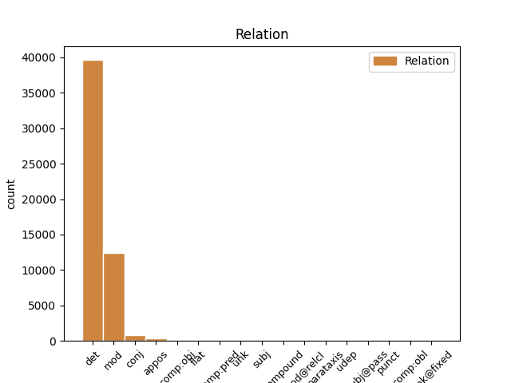
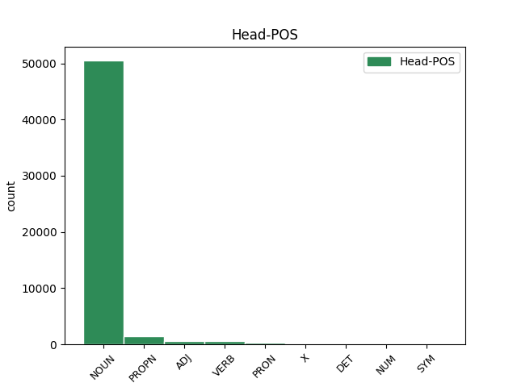
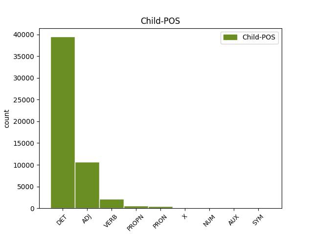

Distribution of features within this leaf



Agreement Rules sorted by frequency.
When the head token is NOUN and the dependent token is DET.
1 En _ _ _ _ 0 _ _ _
2 1991 _ _ _ _ 0 _ _ _
3 , _ _ _ _ 0 _ _ _
4 como _ _ _ _ 0 _ _ _
5 ya _ _ _ _ 0 _ _ _
6 está _ _ _ _ 0 _ _ _
7 indicado _ _ _ _ 0 _ _ _
8 en _ _ _ _ 0 _ _ _
9 el _ _ _ _ 0 _ _ _
10 párrafo _ _ _ _ 0 _ _ _
11 anterior _ _ _ _ 0 _ _ _
12 , _ _ _ _ 0 _ _ _
13 se _ _ _ _ 0 _ _ _
14 creó _ _ _ _ 0 _ _ _
15 un _ _ _ _ 0 _ _ _
16 equipo _ _ _ _ 0 _ _ _
17 ad _ _ _ _ 0 _ _ _
18 hoc _ _ _ _ 0 _ _ _
19 para _ _ _ _ 0 _ _ _
20 averiguar _ _ _ _ 0 _ _ _
21 como _ _ _ _ 0 _ _ _
22 se _ _ _ _ 0 _ _ _
23 podía _ _ _ _ 0 _ _ _
24 desarrollar _ _ _ _ 0 _ _ _
25 el _ _ _ _ 0 _ _ _
26 Dialogo _ _ _ _ 0 _ _ _
27 Social _ _ _ _ 0 _ _ _
28 , _ _ _ _ 0 _ _ _
29 este _ _ _ _ 0 _ _ _
30 equipo _ _ _ _ 0 _ _ _
31 estaba _ _ _ _ 0 _ _ _
32 formado _ _ _ _ 0 _ _ _
33 por _ _ _ _ 0 _ _ _
34 representantes _ _ _ _ 0 _ _ _
35 de _ _ _ _ 0 _ _ _
36 todas _ _ _ _ 0 _ _ _
37 las el DET _ Definite=Def|Gender=Fem|Number=Plur|PronType=Art 38 det _ _
38 organizaciones organización NOUN _ Gender=Fem|Number=Plur 0 _ _ _
39 relacionadas _ _ _ _ 0 _ _ _
40 con _ _ _ _ 0 _ _ _
41 CES _ _ _ _ 0 _ _ _
42 , _ _ _ _ 0 _ _ _
43 UNICE _ _ _ _ 0 _ _ _
44 y _ _ _ _ 0 _ _ _
45 CEEP _ _ _ _ 0 _ _ _
46 ; _ _ _ _ 0 _ _ _
When the head token is NOUN and the dependent token is ADJ.
1 En _ _ _ _ 0 _ _ _
2 1991 _ _ _ _ 0 _ _ _
3 , _ _ _ _ 0 _ _ _
4 como _ _ _ _ 0 _ _ _
5 ya _ _ _ _ 0 _ _ _
6 está _ _ _ _ 0 _ _ _
7 indicado _ _ _ _ 0 _ _ _
8 en _ _ _ _ 0 _ _ _
9 el _ _ _ _ 0 _ _ _
10 párrafo _ _ _ _ 0 _ _ _
11 anterior _ _ _ _ 0 _ _ _
12 , _ _ _ _ 0 _ _ _
13 se _ _ _ _ 0 _ _ _
14 creó _ _ _ _ 0 _ _ _
15 un _ _ _ _ 0 _ _ _
16 equipo equipo NOUN _ Gender=Masc|Number=Sing 0 _ _ _
17 ad ad ADJ _ Gender=Masc|Number=Sing 16 mod _ _
18 hoc _ _ _ _ 0 _ _ _
19 para _ _ _ _ 0 _ _ _
20 averiguar _ _ _ _ 0 _ _ _
21 como _ _ _ _ 0 _ _ _
22 se _ _ _ _ 0 _ _ _
23 podía _ _ _ _ 0 _ _ _
24 desarrollar _ _ _ _ 0 _ _ _
25 el _ _ _ _ 0 _ _ _
26 Dialogo _ _ _ _ 0 _ _ _
27 Social _ _ _ _ 0 _ _ _
28 , _ _ _ _ 0 _ _ _
29 este _ _ _ _ 0 _ _ _
30 equipo _ _ _ _ 0 _ _ _
31 estaba _ _ _ _ 0 _ _ _
32 formado _ _ _ _ 0 _ _ _
33 por _ _ _ _ 0 _ _ _
34 representantes _ _ _ _ 0 _ _ _
35 de _ _ _ _ 0 _ _ _
36 todas _ _ _ _ 0 _ _ _
37 las _ _ _ _ 0 _ _ _
38 organizaciones _ _ _ _ 0 _ _ _
39 relacionadas _ _ _ _ 0 _ _ _
40 con _ _ _ _ 0 _ _ _
41 CES _ _ _ _ 0 _ _ _
42 , _ _ _ _ 0 _ _ _
43 UNICE _ _ _ _ 0 _ _ _
44 y _ _ _ _ 0 _ _ _
45 CEEP _ _ _ _ 0 _ _ _
46 ; _ _ _ _ 0 _ _ _
When the head token is NOUN and the dependent token is VERB.
1 En _ _ _ _ 0 _ _ _
2 1991 _ _ _ _ 0 _ _ _
3 , _ _ _ _ 0 _ _ _
4 como _ _ _ _ 0 _ _ _
5 ya _ _ _ _ 0 _ _ _
6 está _ _ _ _ 0 _ _ _
7 indicado _ _ _ _ 0 _ _ _
8 en _ _ _ _ 0 _ _ _
9 el _ _ _ _ 0 _ _ _
10 párrafo _ _ _ _ 0 _ _ _
11 anterior _ _ _ _ 0 _ _ _
12 , _ _ _ _ 0 _ _ _
13 se _ _ _ _ 0 _ _ _
14 creó _ _ _ _ 0 _ _ _
15 un _ _ _ _ 0 _ _ _
16 equipo _ _ _ _ 0 _ _ _
17 ad _ _ _ _ 0 _ _ _
18 hoc _ _ _ _ 0 _ _ _
19 para _ _ _ _ 0 _ _ _
20 averiguar _ _ _ _ 0 _ _ _
21 como _ _ _ _ 0 _ _ _
22 se _ _ _ _ 0 _ _ _
23 podía _ _ _ _ 0 _ _ _
24 desarrollar _ _ _ _ 0 _ _ _
25 el _ _ _ _ 0 _ _ _
26 Dialogo _ _ _ _ 0 _ _ _
27 Social _ _ _ _ 0 _ _ _
28 , _ _ _ _ 0 _ _ _
29 este _ _ _ _ 0 _ _ _
30 equipo _ _ _ _ 0 _ _ _
31 estaba _ _ _ _ 0 _ _ _
32 formado _ _ _ _ 0 _ _ _
33 por _ _ _ _ 0 _ _ _
34 representantes _ _ _ _ 0 _ _ _
35 de _ _ _ _ 0 _ _ _
36 todas _ _ _ _ 0 _ _ _
37 las _ _ _ _ 0 _ _ _
38 organizaciones organización NOUN _ Gender=Fem|Number=Plur 0 _ _ _
39 relacionadas relacionado VERB _ Gender=Fem|Number=Plur|VerbForm=Part 38 mod _ _
40 con _ _ _ _ 0 _ _ _
41 CES _ _ _ _ 0 _ _ _
42 , _ _ _ _ 0 _ _ _
43 UNICE _ _ _ _ 0 _ _ _
44 y _ _ _ _ 0 _ _ _
45 CEEP _ _ _ _ 0 _ _ _
46 ; _ _ _ _ 0 _ _ _
When the head token is PROPN and the dependent token is DET.
1 De _ _ _ _ 0 _ _ _
2 las _ _ _ _ 0 _ _ _
3 8 _ _ _ _ 0 _ _ _
4 porciones _ _ _ _ 0 _ _ _
5 , _ _ _ _ 0 _ _ _
6 cuatro _ _ _ _ 0 _ _ _
7 correspondieron _ _ _ _ 0 _ _ _
8 a _ _ _ _ 0 _ _ _
9 el _ _ _ _ 0 _ _ _
10 rey _ _ _ _ 0 _ _ _
11 , _ _ _ _ 0 _ _ _
12 una _ _ _ _ 0 _ _ _
13 a _ _ _ _ 0 _ _ _
14 el _ _ _ _ 0 _ _ _
15 conde _ _ _ _ 0 _ _ _
16 de _ _ _ _ 0 _ _ _
17 el el DET _ Definite=Def|Gender=Masc|Number=Sing|PronType=Art 18 det _ _
18 Rosellón rosellón PROPN _ Gender=Masc|Number=Sing 0 _ _ _
19 Nuño _ _ _ _ 0 _ _ _
20 Sánchez _ _ _ _ 0 _ _ _
21 , _ _ _ _ 0 _ _ _
22 una _ _ _ _ 0 _ _ _
23 a _ _ _ _ 0 _ _ _
24 el _ _ _ _ 0 _ _ _
25 obispo _ _ _ _ 0 _ _ _
26 de _ _ _ _ 0 _ _ _
27 Barcelona _ _ _ _ 0 _ _ _
28 Berenguer _ _ _ _ 0 _ _ _
29 de _ _ _ _ 0 _ _ _
30 Palou _ _ _ _ 0 _ _ _
31 , _ _ _ _ 0 _ _ _
32 una _ _ _ _ 0 _ _ _
33 a _ _ _ _ 0 _ _ _
34 el _ _ _ _ 0 _ _ _
35 Conde _ _ _ _ 0 _ _ _
36 de _ _ _ _ 0 _ _ _
37 Ampurias _ _ _ _ 0 _ _ _
38 y _ _ _ _ 0 _ _ _
39 finalmente _ _ _ _ 0 _ _ _
40 otra _ _ _ _ 0 _ _ _
41 a _ _ _ _ 0 _ _ _
42 el _ _ _ _ 0 _ _ _
43 vizconde _ _ _ _ 0 _ _ _
44 de _ _ _ _ 0 _ _ _
45 Bearn _ _ _ _ 0 _ _ _
46 . _ _ _ _ 0 _ _ _
When the head token is ADJ and the dependent token is ADJ.
1 Esta _ _ _ _ 0 _ _ _
2 teoría _ _ _ _ 0 _ _ _
3 se _ _ _ _ 0 _ _ _
4 avenía _ _ _ _ 0 _ _ _
5 bien _ _ _ _ 0 _ _ _
6 con _ _ _ _ 0 _ _ _
7 la _ _ _ _ 0 _ _ _
8 creencia _ _ _ _ 0 _ _ _
9 de _ _ _ _ 0 _ _ _
10 el _ _ _ _ 0 _ _ _
11 Romanticismo _ _ _ _ 0 _ _ _
12 en _ _ _ _ 0 _ _ _
13 un _ _ _ _ 0 _ _ _
14 volkgeist _ _ _ _ 0 _ _ _
15 , _ _ _ _ 0 _ _ _
16 " _ _ _ _ 0 _ _ _
17 genio _ _ _ _ 0 _ _ _
18 o _ _ _ _ 0 _ _ _
19 espíritu _ _ _ _ 0 _ _ _
20 de _ _ _ _ 0 _ _ _
21 el _ _ _ _ 0 _ _ _
22 pueblo _ _ _ _ 0 _ _ _
23 " _ _ _ _ 0 _ _ _
24 , _ _ _ _ 0 _ _ _
25 autor _ _ _ _ 0 _ _ _
26 colectivo colectivo ADJ _ Gender=Masc|Number=Sing 0 _ _ _
27 y _ _ _ _ 0 _ _ _
28 anónimo anónimo ADJ _ Gender=Masc|Number=Sing 26 conj _ _
29 de _ _ _ _ 0 _ _ _
30 una _ _ _ _ 0 _ _ _
31 poesía _ _ _ _ 0 _ _ _
32 nacional _ _ _ _ 0 _ _ _
33 . _ _ _ _ 0 _ _ _
When the head token is PROPN and the dependent token is PROPN.
1 Mauricio mauricio PROPN _ Gender=Masc|Number=Sing 0 _ _ _
2 Bernardo _ _ _ _ 0 _ _ _
3 Victorino victorino PROPN _ Gender=Masc|Number=Sing 1 flat _ _
4 Dansilio _ _ _ _ 0 _ _ _
5 ( _ _ _ _ 0 _ _ _
6 Montevideo _ _ _ _ 0 _ _ _
7 , _ _ _ _ 0 _ _ _
8 Uruguay _ _ _ _ 0 _ _ _
9 , _ _ _ _ 0 _ _ _
10 11 _ _ _ _ 0 _ _ _
11 de _ _ _ _ 0 _ _ _
12 octubre _ _ _ _ 0 _ _ _
13 de _ _ _ _ 0 _ _ _
14 1982 _ _ _ _ 0 _ _ _
15 ) _ _ _ _ 0 _ _ _
16 es _ _ _ _ 0 _ _ _
17 un _ _ _ _ 0 _ _ _
18 futbolista _ _ _ _ 0 _ _ _
19 uruguayo _ _ _ _ 0 _ _ _
20 . _ _ _ _ 0 _ _ _
When the head token is NOUN and the dependent token is PRON.
1 Jazmin _ _ _ _ 0 _ _ _
2 es _ _ _ _ 0 _ _ _
3 todo _ _ _ _ 0 _ _ _
4 lo él PRON _ Case=Acc|Gender=Masc|Number=Sing|Person=3|PrepCase=Npr|PronType=Prs 5 det _ _
5 contrario contrario NOUN _ Gender=Masc|Number=Sing 0 _ _ _
6 , _ _ _ _ 0 _ _ _
7 es _ _ _ _ 0 _ _ _
8 tímida _ _ _ _ 0 _ _ _
9 y _ _ _ _ 0 _ _ _
10 callada _ _ _ _ 0 _ _ _
11 , _ _ _ _ 0 _ _ _
12 pero _ _ _ _ 0 _ _ _
13 siempre _ _ _ _ 0 _ _ _
14 es _ _ _ _ 0 _ _ _
15 arrastrada _ _ _ _ 0 _ _ _
16 por _ _ _ _ 0 _ _ _
17 las _ _ _ _ 0 _ _ _
18 locuras _ _ _ _ 0 _ _ _
19 y _ _ _ _ 0 _ _ _
20 travesuras _ _ _ _ 0 _ _ _
21 que _ _ _ _ 0 _ _ _
22 inventa _ _ _ _ 0 _ _ _
23 Alma _ _ _ _ 0 _ _ _
24 . _ _ _ _ 0 _ _ _
When the head token is NOUN and the dependent token is PROPN.
1 La _ _ _ _ 0 _ _ _
2 ceriflor ceriflor NOUN _ Gender=Fem|Number=Sing 0 _ _ _
3 o _ _ _ _ 0 _ _ _
4 palomera _ _ _ _ 0 _ _ _
5 ( _ _ _ _ 0 _ _ _
6 Cerinthe cerinthe PROPN _ Gender=Fem|Number=Sing 2 appos _ _
7 major _ _ _ _ 0 _ _ _
8 ) _ _ _ _ 0 _ _ _
9 es _ _ _ _ 0 _ _ _
10 una _ _ _ _ 0 _ _ _
11 planta _ _ _ _ 0 _ _ _
12 de _ _ _ _ 0 _ _ _
13 la _ _ _ _ 0 _ _ _
14 familia _ _ _ _ 0 _ _ _
15 de _ _ _ _ 0 _ _ _
16 las _ _ _ _ 0 _ _ _
17 boragináceas _ _ _ _ 0 _ _ _
18 . _ _ _ _ 0 _ _ _
When the head token is VERB and the dependent token is VERB.
1 En _ _ _ _ 0 _ _ _
2 2011 _ _ _ _ 0 _ _ _
3 Televisa _ _ _ _ 0 _ _ _
4 realizó _ _ _ _ 0 _ _ _
5 un _ _ _ _ 0 _ _ _
6 remake _ _ _ _ 0 _ _ _
7 de _ _ _ _ 0 _ _ _
8 esta _ _ _ _ 0 _ _ _
9 historia _ _ _ _ 0 _ _ _
10 Esperanza _ _ _ _ 0 _ _ _
11 del _ _ _ _ 0 _ _ _
12 corazón _ _ _ _ 0 _ _ _
13 también _ _ _ _ 0 _ _ _
14 producida producido VERB _ Gender=Fem|Number=Sing|VerbForm=Part 0 _ _ _
15 por _ _ _ _ 0 _ _ _
16 Luis _ _ _ _ 0 _ _ _
17 de _ _ _ _ 0 _ _ _
18 Llano _ _ _ _ 0 _ _ _
19 Macedo _ _ _ _ 0 _ _ _
20 y _ _ _ _ 0 _ _ _
21 protagonizada protagonizado VERB _ Gender=Fem|Number=Sing|VerbForm=Part 14 conj _ _
22 por _ _ _ _ 0 _ _ _
23 Bianca _ _ _ _ 0 _ _ _
24 Marroquín _ _ _ _ 0 _ _ _
25 y _ _ _ _ 0 _ _ _
26 Patricio _ _ _ _ 0 _ _ _
27 Borghetti _ _ _ _ 0 _ _ _
28 con _ _ _ _ 0 _ _ _
29 la _ _ _ _ 0 _ _ _
30 participación _ _ _ _ 0 _ _ _
31 antagónica _ _ _ _ 0 _ _ _
32 de _ _ _ _ 0 _ _ _
33 Lucía _ _ _ _ 0 _ _ _
34 Méndez _ _ _ _ 0 _ _ _
35 . _ _ _ _ 0 _ _ _
When the head token is PRON and the dependent token is DET.
1 No _ _ _ _ 0 _ _ _
2 pusieron _ _ _ _ 0 _ _ _
3 pegas _ _ _ _ 0 _ _ _
4 a _ _ _ _ 0 _ _ _
5 llegar _ _ _ _ 0 _ _ _
6 tarde _ _ _ _ 0 _ _ _
7 el _ _ _ _ 0 _ _ _
8 día _ _ _ _ 0 _ _ _
9 de _ _ _ _ 0 _ _ _
10 la _ _ _ _ 0 _ _ _
11 entrada _ _ _ _ 0 _ _ _
12 ni _ _ _ _ 0 _ _ _
13 a _ _ _ _ 0 _ _ _
14 salir _ _ _ _ 0 _ _ _
15 un uno DET _ Definite=Ind|Gender=Masc|Number=Sing|PronType=Art 16 det _ _
16 poco poco PRON _ Gender=Masc|Number=Sing|NumType=Card|PronType=Ind 0 _ _ _
17 más _ _ _ _ 0 _ _ _
18 allá _ _ _ _ 0 _ _ _
19 de _ _ _ _ 0 _ _ _
20 las _ _ _ _ 0 _ _ _
21 12 _ _ _ _ 0 _ _ _
22 ( _ _ _ _ 0 _ _ _
23 hora _ _ _ _ 0 _ _ _
24 de _ _ _ _ 0 _ _ _
25 salida _ _ _ _ 0 _ _ _
26 ) _ _ _ _ 0 _ _ _
27 . _ _ _ _ 0 _ _ _
When the head token is ADJ and the dependent token is DET.
1 En _ _ _ _ 0 _ _ _
2 estos _ _ _ _ 0 _ _ _
3 trabajos _ _ _ _ 0 _ _ _
4 se _ _ _ _ 0 _ _ _
5 pusieron _ _ _ _ 0 _ _ _
6 a _ _ _ _ 0 _ _ _
7 el el DET _ Definite=Def|Gender=Masc|Number=Sing|PronType=Art 8 det _ _
8 descubierto descubierto ADJ _ Gender=Masc|Number=Sing 0 _ _ _
9 25 _ _ _ _ 0 _ _ _
10 vanos _ _ _ _ 0 _ _ _
11 correspondientes _ _ _ _ 0 _ _ _
12 a _ _ _ _ 0 _ _ _
13 ventanas _ _ _ _ 0 _ _ _
14 saeteras _ _ _ _ 0 _ _ _
15 que _ _ _ _ 0 _ _ _
16 habían _ _ _ _ 0 _ _ _
17 sido _ _ _ _ 0 _ _ _
18 tapiadas _ _ _ _ 0 _ _ _
19 en _ _ _ _ 0 _ _ _
20 los _ _ _ _ 0 _ _ _
21 siglos _ _ _ _ 0 _ _ _
22 anteriores _ _ _ _ 0 _ _ _
23 . _ _ _ _ 0 _ _ _
When the head token is VERB and the dependent token is DET.
1 El _ _ _ _ 0 _ _ _
2 mandatario _ _ _ _ 0 _ _ _
3 uruguayo _ _ _ _ 0 _ _ _
4 , _ _ _ _ 0 _ _ _
5 quien _ _ _ _ 0 _ _ _
6 llegó _ _ _ _ 0 _ _ _
7 el _ _ _ _ 0 _ _ _
8 domingo _ _ _ _ 0 _ _ _
9 a _ _ _ _ 0 _ _ _
10 Paraguay _ _ _ _ 0 _ _ _
11 , _ _ _ _ 0 _ _ _
12 inició _ _ _ _ 0 _ _ _
13 este _ _ _ _ 0 _ _ _
14 lunes _ _ _ _ 0 _ _ _
15 sus _ _ _ _ 0 _ _ _
16 actividades _ _ _ _ 0 _ _ _
17 a _ _ _ _ 0 _ _ _
18 el el DET _ Definite=Def|Gender=Masc|Number=Sing|PronType=Art 19 det _ _
19 colocar colocar VERB _ Gender=Masc|Number=Sing|VerbForm=Fin 0 _ _ _
20 una _ _ _ _ 0 _ _ _
21 ofrenda _ _ _ _ 0 _ _ _
22 floral _ _ _ _ 0 _ _ _
23 en _ _ _ _ 0 _ _ _
24 el _ _ _ _ 0 _ _ _
25 Panteón _ _ _ _ 0 _ _ _
26 de _ _ _ _ 0 _ _ _
27 los _ _ _ _ 0 _ _ _
28 Héroes _ _ _ _ 0 _ _ _
29 , _ _ _ _ 0 _ _ _
30 tras _ _ _ _ 0 _ _ _
31 lo _ _ _ _ 0 _ _ _
32 cual _ _ _ _ 0 _ _ _
33 se _ _ _ _ 0 _ _ _
34 trasladó _ _ _ _ 0 _ _ _
35 a _ _ _ _ 0 _ _ _
36 el _ _ _ _ 0 _ _ _
37 Palacio _ _ _ _ 0 _ _ _
38 de _ _ _ _ 0 _ _ _
39 Gobierno _ _ _ _ 0 _ _ _
40 donde _ _ _ _ 0 _ _ _
41 fue _ _ _ _ 0 _ _ _
42 condecorado _ _ _ _ 0 _ _ _
43 por _ _ _ _ 0 _ _ _
44 Lugo _ _ _ _ 0 _ _ _
45 . _ _ _ _ 0 _ _ _
When the head token is VERB and the dependent token is PRON.
1 De _ _ _ _ 0 _ _ _
2 la _ _ _ _ 0 _ _ _
3 Vega _ _ _ _ 0 _ _ _
4 ha _ _ _ _ 0 _ _ _
5 pedido _ _ _ _ 0 _ _ _
6 respetar _ _ _ _ 0 _ _ _
7 los _ _ _ _ 0 _ _ _
8 tiempos _ _ _ _ 0 _ _ _
9 de _ _ _ _ 0 _ _ _
10 los _ _ _ _ 0 _ _ _
11 procesos _ _ _ _ 0 _ _ _
12 y _ _ _ _ 0 _ _ _
13 de _ _ _ _ 0 _ _ _
14 la _ _ _ _ 0 _ _ _
15 misma _ _ _ _ 0 _ _ _
16 manera _ _ _ _ 0 _ _ _
17 que _ _ _ _ 0 _ _ _
18 no _ _ _ _ 0 _ _ _
19 ha _ _ _ _ 0 _ _ _
20 querido _ _ _ _ 0 _ _ _
21 entrar _ _ _ _ 0 _ _ _
22 en _ _ _ _ 0 _ _ _
23 la _ _ _ _ 0 _ _ _
24 salida _ _ _ _ 0 _ _ _
25 de _ _ _ _ 0 _ _ _
26 Corbacho _ _ _ _ 0 _ _ _
27 , _ _ _ _ 0 _ _ _
28 tampoco _ _ _ _ 0 _ _ _
29 lo él PRON _ Case=Acc|Gender=Masc|Number=Sing|Person=3|PrepCase=Npr|PronType=Prs 31 comp:obj _ _
30 ha _ _ _ _ 0 _ _ _
31 hecho hacer VERB _ Gender=Masc|Number=Sing|Tense=Past|VerbForm=Part 0 _ _ _
32 la _ _ _ _ 0 _ _ _
33 posible _ _ _ _ 0 _ _ _
34 salida _ _ _ _ 0 _ _ _
35 de _ _ _ _ 0 _ _ _
36 Trinidad _ _ _ _ 0 _ _ _
37 Jiménez _ _ _ _ 0 _ _ _
38 , _ _ _ _ 0 _ _ _
39 que _ _ _ _ 0 _ _ _
40 le _ _ _ _ 0 _ _ _
41 acompañaba _ _ _ _ 0 _ _ _
42 en _ _ _ _ 0 _ _ _
43 la _ _ _ _ 0 _ _ _
44 sala _ _ _ _ 0 _ _ _
45 de _ _ _ _ 0 _ _ _
46 prensa _ _ _ _ 0 _ _ _
47 . _ _ _ _ 0 _ _ _
When the head token is NOUN and the dependent token is NUM.
1 El _ _ _ _ 0 _ _ _
2 representante _ _ _ _ 0 _ _ _
3 de _ _ _ _ 0 _ _ _
4 el _ _ _ _ 0 _ _ _
5 Frente _ _ _ _ 0 _ _ _
6 Cívico _ _ _ _ 0 _ _ _
7 en _ _ _ _ 0 _ _ _
8 Tribunal _ _ _ _ 0 _ _ _
9 de _ _ _ _ 0 _ _ _
10 Cuentas _ _ _ _ 0 _ _ _
11 de _ _ _ _ 0 _ _ _
12 la _ _ _ _ 0 _ _ _
13 provincia _ _ _ _ 0 _ _ _
14 de _ _ _ _ 0 _ _ _
15 Córdoba _ _ _ _ 0 _ _ _
16 , _ _ _ _ 0 _ _ _
17 José _ _ _ _ 0 _ _ _
18 Medina _ _ _ _ 0 _ _ _
19 , _ _ _ _ 0 _ _ _
20 denunció _ _ _ _ 0 _ _ _
21 que _ _ _ _ 0 _ _ _
22 el _ _ _ _ 0 _ _ _
23 gobierno _ _ _ _ 0 _ _ _
24 de _ _ _ _ 0 _ _ _
25 Schiaretti _ _ _ _ 0 _ _ _
26 pidió _ _ _ _ 0 _ _ _
27 autorización _ _ _ _ 0 _ _ _
28 para _ _ _ _ 0 _ _ _
29 realizar _ _ _ _ 0 _ _ _
30 reparaciones _ _ _ _ 0 _ _ _
31 en _ _ _ _ 0 _ _ _
32 la _ _ _ _ 0 _ _ _
33 Casa _ _ _ _ 0 _ _ _
34 de _ _ _ _ 0 _ _ _
35 las _ _ _ _ 0 _ _ _
36 Tejas _ _ _ _ 0 _ _ _
37 por _ _ _ _ 0 _ _ _
38 más _ _ _ _ 0 _ _ _
39 de _ _ _ _ 0 _ _ _
40 un uno NUM _ Gender=Masc|Number=Sing|NumType=Card 41 mod _ _
41 millón millón NOUN _ Gender=Masc|Number=Sing 0 _ _ _
42 de _ _ _ _ 0 _ _ _
43 pesos _ _ _ _ 0 _ _ _
44 el _ _ _ _ 0 _ _ _
45 pasado _ _ _ _ 0 _ _ _
46 19 _ _ _ _ 0 _ _ _
47 de _ _ _ _ 0 _ _ _
48 octubre _ _ _ _ 0 _ _ _
49 , _ _ _ _ 0 _ _ _
50 cuando _ _ _ _ 0 _ _ _
51 ya _ _ _ _ 0 _ _ _
52 estaba _ _ _ _ 0 _ _ _
53 la _ _ _ _ 0 _ _ _
54 decisión _ _ _ _ 0 _ _ _
55 de _ _ _ _ 0 _ _ _
56 demoler _ _ _ _ 0 _ _ _
57 el _ _ _ _ 0 _ _ _
58 edificio _ _ _ _ 0 _ _ _
59 . _ _ _ _ 0 _ _ _
When the head token is X and the dependent token is DET.
1 Esto _ _ _ _ 0 _ _ _
2 se _ _ _ _ 0 _ _ _
3 explota _ _ _ _ 0 _ _ _
4 en _ _ _ _ 0 _ _ _
5 desarrollo _ _ _ _ 0 _ _ _
6 de _ _ _ _ 0 _ _ _
7 drogas _ _ _ _ 0 _ _ _
8 para _ _ _ _ 0 _ _ _
9 aumentar _ _ _ _ 0 _ _ _
10 la _ _ _ _ 0 _ _ _
11 concentración _ _ _ _ 0 _ _ _
12 de _ _ _ _ 0 _ _ _
13 un _ _ _ _ 0 _ _ _
14 compuesto _ _ _ _ 0 _ _ _
15 en _ _ _ _ 0 _ _ _
16 la _ _ _ _ 0 _ _ _
17 sangre _ _ _ _ 0 _ _ _
18 ajustando _ _ _ _ 0 _ _ _
19 el el DET _ Definite=Def|Gender=Masc|Number=Sing|PronType=Art 20 det _ _
20 pKa pka X _ Gender=Masc|Number=Sing 0 _ _ _
21 de _ _ _ _ 0 _ _ _
22 un _ _ _ _ 0 _ _ _
23 grupo _ _ _ _ 0 _ _ _
24 ionizable _ _ _ _ 0 _ _ _
25 . _ _ _ _ 0 _ _ _
When the head token is NOUN and the dependent token is X.
1 Con _ _ _ _ 0 _ _ _
2 ayuda _ _ _ _ 0 _ _ _
3 de _ _ _ _ 0 _ _ _
4 otras _ _ _ _ 0 _ _ _
5 tribus tribu NOUN _ Gender=Masc 0 _ _ _
6 prusiasm prusiasm X _ Gender=Masc|Number=Sing 5 mod _ _
7 Diwanus _ _ _ _ 0 _ _ _
8 atacó _ _ _ _ 0 _ _ _
9 Chełmno _ _ _ _ 0 _ _ _
10 , _ _ _ _ 0 _ _ _
11 Malbork _ _ _ _ 0 _ _ _
12 y _ _ _ _ 0 _ _ _
13 Christburgo _ _ _ _ 0 _ _ _
14 . _ _ _ _ 0 _ _ _
When the head token is PRON and the dependent token is ADJ.
1 Les _ _ _ _ 0 _ _ _
2 he _ _ _ _ 0 _ _ _
3 pedido _ _ _ _ 0 _ _ _
4 donde _ _ _ _ 0 _ _ _
5 podía _ _ _ _ 0 _ _ _
6 encontrar _ _ _ _ 0 _ _ _
7 un _ _ _ _ 0 _ _ _
8 fabricante _ _ _ _ 0 _ _ _
9 de _ _ _ _ 0 _ _ _
10 trofeos _ _ _ _ 0 _ _ _
11 en _ _ _ _ 0 _ _ _
12 metacrilato _ _ _ _ 0 _ _ _
13 , _ _ _ _ 0 _ _ _
14 y _ _ _ _ 0 _ _ _
15 ellos él PRON _ Case=Acc,Nom|Gender=Masc|Number=Plur|Person=3|PronType=Prs 0 _ _ _
16 mismos mismo ADJ _ Gender=Masc|Number=Plur 15 mod _ _
17 me _ _ _ _ 0 _ _ _
18 los _ _ _ _ 0 _ _ _
19 han _ _ _ _ 0 _ _ _
20 fabricado _ _ _ _ 0 _ _ _
21 a _ _ _ _ 0 _ _ _
22 un _ _ _ _ 0 _ _ _
23 precio _ _ _ _ 0 _ _ _
24 muy _ _ _ _ 0 _ _ _
25 interesante _ _ _ _ 0 _ _ _
26 . _ _ _ _ 0 _ _ _
When the head token is PRON and the dependent token is VERB.
1 Esa _ _ _ _ 0 _ _ _
2 iniciativa _ _ _ _ 0 _ _ _
3 , _ _ _ _ 0 _ _ _
4 como _ _ _ _ 0 _ _ _
5 otras otro PRON _ Gender=Fem|Number=Plur|PronType=Ind 0 _ _ _
6 surgidas surgido VERB _ Gender=Fem|Number=Plur|VerbForm=Part 5 mod _ _
7 en _ _ _ _ 0 _ _ _
8 las _ _ _ _ 0 _ _ _
9 últimas _ _ _ _ 0 _ _ _
10 semanas _ _ _ _ 0 _ _ _
11 , _ _ _ _ 0 _ _ _
12 ha _ _ _ _ 0 _ _ _
13 estado _ _ _ _ 0 _ _ _
14 alentada _ _ _ _ 0 _ _ _
15 por _ _ _ _ 0 _ _ _
16 el _ _ _ _ 0 _ _ _
17 debate _ _ _ _ 0 _ _ _
18 en _ _ _ _ 0 _ _ _
19 la _ _ _ _ 0 _ _ _
20 Red. _ _ _ _ 0 _ _ _
When the head token is PROPN and the dependent token is ADJ.
1 La _ _ _ _ 0 _ _ _
2 Primera _ _ _ _ 0 _ _ _
3 División división PROPN _ Gender=Fem|Number=Sing 0 _ _ _
4 Blindada _ _ _ _ 0 _ _ _
5 polaca polaco ADJ _ Gender=Fem|Number=Sing 3 mod _ _
6 se _ _ _ _ 0 _ _ _
7 encaminó _ _ _ _ 0 _ _ _
8 hacia _ _ _ _ 0 _ _ _
9 la _ _ _ _ 0 _ _ _
10 frontera _ _ _ _ 0 _ _ _
11 belga _ _ _ _ 0 _ _ _
12 - _ _ _ _ 0 _ _ _
13 neerlandesa _ _ _ _ 0 _ _ _
14 más _ _ _ _ 0 _ _ _
15 a _ _ _ _ 0 _ _ _
16 el _ _ _ _ 0 _ _ _
17 este _ _ _ _ 0 _ _ _
18 y _ _ _ _ 0 _ _ _
19 la _ _ _ _ 0 _ _ _
20 zona _ _ _ _ 0 _ _ _
21 crucial _ _ _ _ 0 _ _ _
22 a _ _ _ _ 0 _ _ _
23 el _ _ _ _ 0 _ _ _
24 norte _ _ _ _ 0 _ _ _
25 de _ _ _ _ 0 _ _ _
26 Amberes _ _ _ _ 0 _ _ _
27 . _ _ _ _ 0 _ _ _
When the head token is VERB and the dependent token is ADJ.
1 Hemos _ _ _ _ 0 _ _ _
2 tenido tener VERB _ Gender=Masc|Number=Sing|Tense=Past|VerbForm=Part 0 _ _ _
3 todo _ _ _ _ 0 _ _ _
4 guardado guardado ADJ _ Gender=Masc|Number=Sing 2 comp:pred _ _
5 allí _ _ _ _ 0 _ _ _
6 durante _ _ _ _ 0 _ _ _
7 10 _ _ _ _ 0 _ _ _
8 meses _ _ _ _ 0 _ _ _
9 . _ _ _ _ 0 _ _ _
When the head token is PROPN and the dependent token is VERB.
1 A _ _ _ _ 0 _ _ _
2 continuación _ _ _ _ 0 _ _ _
3 , _ _ _ _ 0 _ _ _
4 sonarán _ _ _ _ 0 _ _ _
5 los _ _ _ _ 0 _ _ _
6 ritmos _ _ _ _ 0 _ _ _
7 más _ _ _ _ 0 _ _ _
8 intensos _ _ _ _ 0 _ _ _
9 de _ _ _ _ 0 _ _ _
10 los _ _ _ _ 0 _ _ _
11 llanos _ _ _ _ 0 _ _ _
12 interpretados _ _ _ _ 0 _ _ _
13 por _ _ _ _ 0 _ _ _
14 una _ _ _ _ 0 _ _ _
15 agrupación _ _ _ _ 0 _ _ _
16 que _ _ _ _ 0 _ _ _
17 romperá _ _ _ _ 0 _ _ _
18 esquemas _ _ _ _ 0 _ _ _
19 : _ _ _ _ 0 _ _ _
20 el _ _ _ _ 0 _ _ _
21 Ensamble ensamble PROPN _ Gender=Masc|Number=Sing 0 _ _ _
22 de _ _ _ _ 0 _ _ _
23 Arpas _ _ _ _ 0 _ _ _
24 de _ _ _ _ 0 _ _ _
25 la _ _ _ _ 0 _ _ _
26 Orquesta _ _ _ _ 0 _ _ _
27 de _ _ _ _ 0 _ _ _
28 Música _ _ _ _ 0 _ _ _
29 Popular _ _ _ _ 0 _ _ _
30 de _ _ _ _ 0 _ _ _
31 el _ _ _ _ 0 _ _ _
32 Estado _ _ _ _ 0 _ _ _
33 Guárico _ _ _ _ 0 _ _ _
34 , _ _ _ _ 0 _ _ _
35 integrado integrado VERB _ Gender=Masc|Number=Sing|VerbForm=Part 21 mod _ _
36 por _ _ _ _ 0 _ _ _
37 14 _ _ _ _ 0 _ _ _
38 ejecutantes _ _ _ _ 0 _ _ _
39 , _ _ _ _ 0 _ _ _
40 todos _ _ _ _ 0 _ _ _
41 formados _ _ _ _ 0 _ _ _
42 por _ _ _ _ 0 _ _ _
43 El _ _ _ _ 0 _ _ _
44 Sistema _ _ _ _ 0 _ _ _
45 , _ _ _ _ 0 _ _ _
46 siendo _ _ _ _ 0 _ _ _
47 algunos _ _ _ _ 0 _ _ _
48 de _ _ _ _ 0 _ _ _
49 ellos _ _ _ _ 0 _ _ _
50 ganadores _ _ _ _ 0 _ _ _
51 de _ _ _ _ 0 _ _ _
52 el _ _ _ _ 0 _ _ _
53 reconocido _ _ _ _ 0 _ _ _
54 Festival _ _ _ _ 0 _ _ _
55 Internacional _ _ _ _ 0 _ _ _
56 de _ _ _ _ 0 _ _ _
57 Arpas _ _ _ _ 0 _ _ _
58 Infantil _ _ _ _ 0 _ _ _
59 y _ _ _ _ 0 _ _ _
60 Adultos _ _ _ _ 0 _ _ _
61 de _ _ _ _ 0 _ _ _
62 Villavicencio _ _ _ _ 0 _ _ _
63 , _ _ _ _ 0 _ _ _
64 Colombia _ _ _ _ 0 _ _ _
65 . _ _ _ _ 0 _ _ _
When the head token is PRON and the dependent token is PRON.
1 El _ _ _ _ 0 _ _ _
2 proyecto _ _ _ _ 0 _ _ _
3 original _ _ _ _ 0 _ _ _
4 ofrecía _ _ _ _ 0 _ _ _
5 dos _ _ _ _ 0 _ _ _
6 acabados _ _ _ _ 0 _ _ _
7 distintos _ _ _ _ 0 _ _ _
8 , _ _ _ _ 0 _ _ _
9 uno uno PRON _ Gender=Masc|Number=Sing|PronType=Ind 0 _ _ _
10 con _ _ _ _ 0 _ _ _
11 pilastras _ _ _ _ 0 _ _ _
12 y _ _ _ _ 0 _ _ _
13 otro otro PRON _ Gender=Masc|Number=Sing|PronType=Ind 9 conj _ _
14 con _ _ _ _ 0 _ _ _
15 columnas _ _ _ _ 0 _ _ _
16 adosadas _ _ _ _ 0 _ _ _
17 . _ _ _ _ 0 _ _ _
When the head token is X and the dependent token is X.
1 Með _ _ _ _ 0 _ _ _
2 suð _ _ _ _ 0 _ _ _
3 í _ _ _ _ 0 _ _ _
4 eyrum _ _ _ _ 0 _ _ _
5 við við X _ Gender=Masc|Number=Sing 6 compound _ _
6 spilum spilum X _ Gender=Masc|Number=Sing 0 _ _ _
7 endalaust _ _ _ _ 0 _ _ _
8 ( _ _ _ _ 0 _ _ _
9 IPA _ _ _ _ 0 _ _ _
10 : _ _ _ _ 0 _ _ _
11 ) _ _ _ _ 0 _ _ _
12 , _ _ _ _ 0 _ _ _
13 ( _ _ _ _ 0 _ _ _
14 en _ _ _ _ 0 _ _ _
15 español _ _ _ _ 0 _ _ _
16 : _ _ _ _ 0 _ _ _
17 " _ _ _ _ 0 _ _ _
18 Con _ _ _ _ 0 _ _ _
19 un _ _ _ _ 0 _ _ _
20 zumbido _ _ _ _ 0 _ _ _
21 en _ _ _ _ 0 _ _ _
22 nuestros _ _ _ _ 0 _ _ _
23 oídos _ _ _ _ 0 _ _ _
24 tocamos _ _ _ _ 0 _ _ _
25 eternamente _ _ _ _ 0 _ _ _
26 " _ _ _ _ 0 _ _ _
27 ) _ _ _ _ 0 _ _ _
28 , _ _ _ _ 0 _ _ _
29 es _ _ _ _ 0 _ _ _
30 el _ _ _ _ 0 _ _ _
31 quinto _ _ _ _ 0 _ _ _
32 álbum _ _ _ _ 0 _ _ _
33 de _ _ _ _ 0 _ _ _
34 estudio _ _ _ _ 0 _ _ _
35 de _ _ _ _ 0 _ _ _
36 la _ _ _ _ 0 _ _ _
37 banda _ _ _ _ 0 _ _ _
38 islandesa _ _ _ _ 0 _ _ _
39 Sigur _ _ _ _ 0 _ _ _
40 Rós _ _ _ _ 0 _ _ _
41 , _ _ _ _ 0 _ _ _
42 lanzado _ _ _ _ 0 _ _ _
43 el _ _ _ _ 0 _ _ _
44 23 _ _ _ _ 0 _ _ _
45 de _ _ _ _ 0 _ _ _
46 junio _ _ _ _ 0 _ _ _
47 de _ _ _ _ 0 _ _ _
48 2008 _ _ _ _ 0 _ _ _
49 . _ _ _ _ 0 _ _ _
When the head token is ADJ and the dependent token is VERB.
1 Consolidada _ _ _ _ 0 _ _ _
2 como _ _ _ _ 0 _ _ _
3 una _ _ _ _ 0 _ _ _
4 de _ _ _ _ 0 _ _ _
5 las _ _ _ _ 0 _ _ _
6 grandes _ _ _ _ 0 _ _ _
7 cadenas _ _ _ _ 0 _ _ _
8 españolas _ _ _ _ 0 _ _ _
9 , _ _ _ _ 0 _ _ _
10 ' _ _ _ _ 0 _ _ _
11 Sercotel _ _ _ _ 0 _ _ _
12 hotels _ _ _ _ 0 _ _ _
13 ' _ _ _ _ 0 _ _ _
14 , _ _ _ _ 0 _ _ _
15 fundada _ _ _ _ 0 _ _ _
16 en _ _ _ _ 0 _ _ _
17 1994 _ _ _ _ 0 _ _ _
18 , _ _ _ _ 0 _ _ _
19 introdujo _ _ _ _ 0 _ _ _
20 en _ _ _ _ 0 _ _ _
21 España _ _ _ _ 0 _ _ _
22 un _ _ _ _ 0 _ _ _
23 nuevo _ _ _ _ 0 _ _ _
24 modelo _ _ _ _ 0 _ _ _
25 de _ _ _ _ 0 _ _ _
26 cadena _ _ _ _ 0 _ _ _
27 hotelera hotelero ADJ _ Gender=Fem|Number=Sing 0 _ _ _
28 basada basado VERB _ Gender=Fem|Number=Sing|VerbForm=Part 27 mod _ _
29 en _ _ _ _ 0 _ _ _
30 la _ _ _ _ 0 _ _ _
31 comercialización _ _ _ _ 0 _ _ _
32 conjunta _ _ _ _ 0 _ _ _
33 bajo _ _ _ _ 0 _ _ _
34 una _ _ _ _ 0 _ _ _
35 misma _ _ _ _ 0 _ _ _
36 marca _ _ _ _ 0 _ _ _
37 de _ _ _ _ 0 _ _ _
38 hoteles _ _ _ _ 0 _ _ _
39 , _ _ _ _ 0 _ _ _
40 cuya _ _ _ _ 0 _ _ _
41 explotación _ _ _ _ 0 _ _ _
42 pertenece _ _ _ _ 0 _ _ _
43 a _ _ _ _ 0 _ _ _
44 diferentes _ _ _ _ 0 _ _ _
45 propietarios _ _ _ _ 0 _ _ _
46 , _ _ _ _ 0 _ _ _
47 permitiéndo _ _ _ _ 0 _ _ _
48 les _ _ _ _ 0 _ _ _
49 competir _ _ _ _ 0 _ _ _
50 contra _ _ _ _ 0 _ _ _
51 las _ _ _ _ 0 _ _ _
52 cadenas _ _ _ _ 0 _ _ _
53 en _ _ _ _ 0 _ _ _
54 igualdad _ _ _ _ 0 _ _ _
55 de _ _ _ _ 0 _ _ _
56 condiciones _ _ _ _ 0 _ _ _
57 , _ _ _ _ 0 _ _ _
58 lo _ _ _ _ 0 _ _ _
59 que _ _ _ _ 0 _ _ _
60 le _ _ _ _ 0 _ _ _
61 ha _ _ _ _ 0 _ _ _
62 llevado _ _ _ _ 0 _ _ _
63 a _ _ _ _ 0 _ _ _
64 convertir _ _ _ _ 0 _ _ _
65 se _ _ _ _ 0 _ _ _
66 hoy _ _ _ _ 0 _ _ _
67 en _ _ _ _ 0 _ _ _
68 día _ _ _ _ 0 _ _ _
69 en _ _ _ _ 0 _ _ _
70 el _ _ _ _ 0 _ _ _
71 segundo _ _ _ _ 0 _ _ _
72 emblema _ _ _ _ 0 _ _ _
73 con _ _ _ _ 0 _ _ _
74 mayor _ _ _ _ 0 _ _ _
75 oferta _ _ _ _ 0 _ _ _
76 de _ _ _ _ 0 _ _ _
77 hoteles _ _ _ _ 0 _ _ _
78 urbanos _ _ _ _ 0 _ _ _
79 en _ _ _ _ 0 _ _ _
80 España _ _ _ _ 0 _ _ _
81 . _ _ _ _ 0 _ _ _
When the head token is X and the dependent token is ADJ.
1 The _ _ _ _ 0 _ _ _
2 Rolling _ _ _ _ 0 _ _ _
3 Stones _ _ _ _ 0 _ _ _
4 British _ _ _ _ 0 _ _ _
5 Tour _ _ _ _ 0 _ _ _
6 1966 _ _ _ _ 0 _ _ _
7 fue _ _ _ _ 0 _ _ _
8 una _ _ _ _ 0 _ _ _
9 gira _ _ _ _ 0 _ _ _
10 de _ _ _ _ 0 _ _ _
11 conciertos _ _ _ _ 0 _ _ _
12 musicales _ _ _ _ 0 _ _ _
13 realizada _ _ _ _ 0 _ _ _
14 por _ _ _ _ 0 _ _ _
15 la _ _ _ _ 0 _ _ _
16 banda _ _ _ _ 0 _ _ _
17 , _ _ _ _ 0 _ _ _
18 que _ _ _ _ 0 _ _ _
19 comenzó _ _ _ _ 0 _ _ _
20 el _ _ _ _ 0 _ _ _
21 23 _ _ _ _ 0 _ _ _
22 de _ _ _ _ 0 _ _ _
23 septiembre _ _ _ _ 0 _ _ _
24 de _ _ _ _ 0 _ _ _
25 1966 _ _ _ _ 0 _ _ _
26 y _ _ _ _ 0 _ _ _
27 finalizó _ _ _ _ 0 _ _ _
28 el _ _ _ _ 0 _ _ _
29 9 _ _ _ _ 0 _ _ _
30 de _ _ _ _ 0 _ _ _
31 octubre _ _ _ _ 0 _ _ _
32 de _ _ _ _ 0 _ _ _
33 el _ _ _ _ 0 _ _ _
34 mismo mismo ADJ _ Gender=Masc|Number=Sing 35 mod _ _
35 añ12o añ12o X _ Gender=Masc|Number=Sing 0 _ _ _
36 . _ _ _ _ 0 _ _ _
When the head token is VERB and the dependent token is PROPN.
1 Hay _ _ _ _ 0 _ _ _
2 varios _ _ _ _ 0 _ _ _
3 ejércitos _ _ _ _ 0 _ _ _
4 con _ _ _ _ 0 _ _ _
5 igualdad _ _ _ _ 0 _ _ _
6 de _ _ _ _ 0 _ _ _
7 fortaleza _ _ _ _ 0 _ _ _
8 para _ _ _ _ 0 _ _ _
9 elegir _ _ _ _ 0 _ _ _
10 , _ _ _ _ 0 _ _ _
11 incluido incluir VERB _ Gender=Masc|Number=Sing|Tense=Past|VerbForm=Part 0 _ _ _
12 el _ _ _ _ 0 _ _ _
13 ejército ejército PROPN _ Gender=Masc|Number=Sing 11 comp:obj _ _
14 FIDE _ _ _ _ 0 _ _ _
15 . _ _ _ _ 0 _ _ _
When the head token is ADJ and the dependent token is PRON.
1 Los _ _ _ _ 0 _ _ _
2 niños _ _ _ _ 0 _ _ _
3 se _ _ _ _ 0 _ _ _
4 lo _ _ _ _ 0 _ _ _
5 pasaron _ _ _ _ 0 _ _ _
6 de _ _ _ _ 0 _ _ _
7 lo él PRON _ Case=Acc|Gender=Masc|Number=Sing|Person=3|PrepCase=Npr|PronType=Prs 9 det _ _
8 mas _ _ _ _ 0 _ _ _
9 divertido divertido ADJ _ Gender=Masc|Number=Sing|VerbForm=Part 0 _ _ _
10 , _ _ _ _ 0 _ _ _
11 las _ _ _ _ 0 _ _ _
12 comidas _ _ _ _ 0 _ _ _
13 son _ _ _ _ 0 _ _ _
14 buenísimas _ _ _ _ 0 _ _ _
15 y _ _ _ _ 0 _ _ _
16 el _ _ _ _ 0 _ _ _
17 hotel _ _ _ _ 0 _ _ _
18 es _ _ _ _ 0 _ _ _
19 pequeño _ _ _ _ 0 _ _ _
20 pero _ _ _ _ 0 _ _ _
21 muy _ _ _ _ 0 _ _ _
22 acogedor _ _ _ _ 0 _ _ _
23 . _ _ _ _ 0 _ _ _
When the head token is DET and the dependent token is DET.
1 Sin _ _ _ _ 0 _ _ _
2 embargo _ _ _ _ 0 _ _ _
3 , _ _ _ _ 0 _ _ _
4 estas este DET _ Gender=Fem|Number=Plur|PronType=Dem 0 _ _ _
5 y _ _ _ _ 0 _ _ _
6 otras otro DET _ Gender=Fem|Number=Plur|PronType=Ind 4 conj _ _
7 obras _ _ _ _ 0 _ _ _
8 suyas _ _ _ _ 0 _ _ _
9 de _ _ _ _ 0 _ _ _
10 música _ _ _ _ 0 _ _ _
11 de _ _ _ _ 0 _ _ _
12 cámara _ _ _ _ 0 _ _ _
13 fueron _ _ _ _ 0 _ _ _
14 muy _ _ _ _ 0 _ _ _
15 demandadas _ _ _ _ 0 _ _ _
16 , _ _ _ _ 0 _ _ _
17 por _ _ _ _ 0 _ _ _
18 su _ _ _ _ 0 _ _ _
19 originalidad _ _ _ _ 0 _ _ _
20 y _ _ _ _ 0 _ _ _
21 nobleza _ _ _ _ 0 _ _ _
22 . _ _ _ _ 0 _ _ _
When the head token is NUM and the dependent token is DET.
1 Alrededor _ _ _ _ 0 _ _ _
2 de _ _ _ _ 0 _ _ _
3 las el DET _ Definite=Def|Gender=Fem|Number=Plur|PronType=Art 4 det _ _
4 doce doce NUM _ Gender=Fem|Number=Plur|NumType=Card 0 _ _ _
5 y _ _ _ _ 0 _ _ _
6 media _ _ _ _ 0 _ _ _
7 de _ _ _ _ 0 _ _ _
8 la _ _ _ _ 0 _ _ _
9 mañana _ _ _ _ 0 _ _ _
10 de _ _ _ _ 0 _ _ _
11 este _ _ _ _ 0 _ _ _
12 lunes _ _ _ _ 0 _ _ _
13 , _ _ _ _ 0 _ _ _
14 un _ _ _ _ 0 _ _ _
15 particular _ _ _ _ 0 _ _ _
16 alertó _ _ _ _ 0 _ _ _
17 de _ _ _ _ 0 _ _ _
18 que _ _ _ _ 0 _ _ _
19 se _ _ _ _ 0 _ _ _
20 había _ _ _ _ 0 _ _ _
21 cometido _ _ _ _ 0 _ _ _
22 un _ _ _ _ 0 _ _ _
23 robo _ _ _ _ 0 _ _ _
24 en _ _ _ _ 0 _ _ _
25 un _ _ _ _ 0 _ _ _
26 caserío _ _ _ _ 0 _ _ _
27 de _ _ _ _ 0 _ _ _
28 Mallabia _ _ _ _ 0 _ _ _
29 y _ _ _ _ 0 _ _ _
30 que _ _ _ _ 0 _ _ _
31 los _ _ _ _ 0 _ _ _
32 autores _ _ _ _ 0 _ _ _
33 iban _ _ _ _ 0 _ _ _
34 a _ _ _ _ 0 _ _ _
35 bordo _ _ _ _ 0 _ _ _
36 de _ _ _ _ 0 _ _ _
37 un _ _ _ _ 0 _ _ _
38 Renault _ _ _ _ 0 _ _ _
39 Megane _ _ _ _ 0 _ _ _
40 . _ _ _ _ 0 _ _ _
When the head token is ADJ and the dependent token is X.
1 El _ _ _ _ 0 _ _ _
2 impacto _ _ _ _ 0 _ _ _
3 socio socio X _ Gender=Masc|Number=Sing 4 unk _ _
4 económico económico ADJ _ Gender=Masc|Number=Sing 0 _ _ _
5 que _ _ _ _ 0 _ _ _
6 habrá _ _ _ _ 0 _ _ _
7 en _ _ _ _ 0 _ _ _
8 la _ _ _ _ 0 _ _ _
9 zona _ _ _ _ 0 _ _ _
10 es _ _ _ _ 0 _ _ _
11 más _ _ _ _ 0 _ _ _
12 que _ _ _ _ 0 _ _ _
13 significativo _ _ _ _ 0 _ _ _
14 . _ _ _ _ 0 _ _ _
When the head token is DET and the dependent token is ADJ.
1 La _ _ _ _ 0 _ _ _
2 garganta _ _ _ _ 0 _ _ _
3 y _ _ _ _ 0 _ _ _
4 el _ _ _ _ 0 _ _ _
5 vientre _ _ _ _ 0 _ _ _
6 son _ _ _ _ 0 _ _ _
7 blanquecinos _ _ _ _ 0 _ _ _
8 , _ _ _ _ 0 _ _ _
9 la _ _ _ _ 0 _ _ _
10 cola _ _ _ _ 0 _ _ _
11 es _ _ _ _ 0 _ _ _
12 parda _ _ _ _ 0 _ _ _
13 olivácea _ _ _ _ 0 _ _ _
14 oscura _ _ _ _ 0 _ _ _
15 , _ _ _ _ 0 _ _ _
16 lo _ _ _ _ 0 _ _ _
17 mismo _ _ _ _ 0 _ _ _
18 que _ _ _ _ 0 _ _ _
19 las _ _ _ _ 0 _ _ _
20 alas _ _ _ _ 0 _ _ _
21 , _ _ _ _ 0 _ _ _
22 pero _ _ _ _ 0 _ _ _
23 estas este DET _ Gender=Fem|Number=Plur|PronType=Dem 0 _ _ _
24 últimas último ADJ _ Gender=Fem|Number=Plur 23 mod _ _
25 tienen _ _ _ _ 0 _ _ _
26 barras _ _ _ _ 0 _ _ _
27 blancas _ _ _ _ 0 _ _ _
28 en _ _ _ _ 0 _ _ _
29 las _ _ _ _ 0 _ _ _
30 alas _ _ _ _ 0 _ _ _
31 . _ _ _ _ 0 _ _ _
When the head token is PROPN and the dependent token is X.
1 Para _ _ _ _ 0 _ _ _
2 afrontar _ _ _ _ 0 _ _ _
3 sus _ _ _ _ 0 _ _ _
4 gastos _ _ _ _ 0 _ _ _
5 , _ _ _ _ 0 _ _ _
6 Heyer _ _ _ _ 0 _ _ _
7 vendió _ _ _ _ 0 _ _ _
8 los _ _ _ _ 0 _ _ _
9 derechos _ _ _ _ 0 _ _ _
10 otorgados _ _ _ _ 0 _ _ _
11 por _ _ _ _ 0 _ _ _
12 la _ _ _ _ 0 _ _ _
13 Commonwealth _ _ _ _ 0 _ _ _
14 por _ _ _ _ 0 _ _ _
15 Esas _ _ _ _ 0 _ _ _
16 viejas _ _ _ _ 0 _ _ _
17 sombras _ _ _ _ 0 _ _ _
18 , _ _ _ _ 0 _ _ _
19 Devil devil PROPN _ Gender=Masc|Number=Sing 0 _ _ _
20 's 's X _ Gender=Masc|Number=Sing 19 unk _ _
21 Cub _ _ _ _ 0 _ _ _
22 , _ _ _ _ 0 _ _ _
23 y _ _ _ _ 0 _ _ _
24 Regency _ _ _ _ 0 _ _ _
25 Buck _ _ _ _ 0 _ _ _
26 a _ _ _ _ 0 _ _ _
27 su _ _ _ _ 0 _ _ _
28 compañía _ _ _ _ 0 _ _ _
29 editorial _ _ _ _ 0 _ _ _
30 , _ _ _ _ 0 _ _ _
31 Heinemann _ _ _ _ 0 _ _ _
32 , _ _ _ _ 0 _ _ _
33 por _ _ _ _ 0 _ _ _
34 £ _ _ _ _ 0 _ _ _
35 750 _ _ _ _ 0 _ _ _
36 . _ _ _ _ 0 _ _ _
When the head token is SYM and the dependent token is DET.
1 El _ _ _ _ 0 _ _ _
2 condado _ _ _ _ 0 _ _ _
3 posee _ _ _ _ 0 _ _ _
4 un _ _ _ _ 0 _ _ _
5 área _ _ _ _ 0 _ _ _
6 de _ _ _ _ 0 _ _ _
7 1.482 _ _ _ _ 0 _ _ _
8 km _ _ _ _ 0 _ _ _
9 ² _ _ _ _ 0 _ _ _
10 ( _ _ _ _ 0 _ _ _
11 los el DET _ Definite=Def|Gender=Masc|Number=Plur|PronType=Art 14 det _ _
12 cuales _ _ _ _ 0 _ _ _
13 4 _ _ _ _ 0 _ _ _
14 km km SYM _ Gender=Masc 0 _ _ _
15 ² _ _ _ _ 0 _ _ _
16 están _ _ _ _ 0 _ _ _
17 cubiertos _ _ _ _ 0 _ _ _
18 de _ _ _ _ 0 _ _ _
19 agua _ _ _ _ 0 _ _ _
20 ) _ _ _ _ 0 _ _ _
21 , _ _ _ _ 0 _ _ _
22 una _ _ _ _ 0 _ _ _
23 población _ _ _ _ 0 _ _ _
24 de _ _ _ _ 0 _ _ _
25 10.724 _ _ _ _ 0 _ _ _
26 habitantes _ _ _ _ 0 _ _ _
27 , _ _ _ _ 0 _ _ _
28 y _ _ _ _ 0 _ _ _
29 la _ _ _ _ 0 _ _ _
30 densidad _ _ _ _ 0 _ _ _
31 de _ _ _ _ 0 _ _ _
32 población _ _ _ _ 0 _ _ _
33 es _ _ _ _ 0 _ _ _
34 de _ _ _ _ 0 _ _ _
35 7 _ _ _ _ 0 _ _ _
36 hab _ _ _ _ 0 _ _ _
37 / _ _ _ _ 0 _ _ _
38 km _ _ _ _ 0 _ _ _
39 ² _ _ _ _ 0 _ _ _
40 ( _ _ _ _ 0 _ _ _
41 según _ _ _ _ 0 _ _ _
42 censo _ _ _ _ 0 _ _ _
43 nacional _ _ _ _ 0 _ _ _
44 de _ _ _ _ 0 _ _ _
45 2000 _ _ _ _ 0 _ _ _
46 ) _ _ _ _ 0 _ _ _
47 . _ _ _ _ 0 _ _ _
When the head token is DET and the dependent token is VERB.
1 Para _ _ _ _ 0 _ _ _
2 que _ _ _ _ 0 _ _ _
3 la _ _ _ _ 0 _ _ _
4 costumbre _ _ _ _ 0 _ _ _
5 no _ _ _ _ 0 _ _ _
6 se _ _ _ _ 0 _ _ _
7 pierda _ _ _ _ 0 _ _ _
8 , _ _ _ _ 0 _ _ _
9 la _ _ _ _ 0 _ _ _
10 compañía _ _ _ _ 0 _ _ _
11 arranca _ _ _ _ 0 _ _ _
12 la _ _ _ _ 0 _ _ _
13 semana _ _ _ _ 0 _ _ _
14 con _ _ _ _ 0 _ _ _
15 el _ _ _ _ 0 _ _ _
16 lanzamiento _ _ _ _ 0 _ _ _
17 en _ _ _ _ 0 _ _ _
18 España _ _ _ _ 0 _ _ _
19 precisamente _ _ _ _ 0 _ _ _
20 de _ _ _ _ 0 _ _ _
21 un _ _ _ _ 0 _ _ _
22 teléfono _ _ _ _ 0 _ _ _
23 con _ _ _ _ 0 _ _ _
24 este _ _ _ _ 0 _ _ _
25 diseño _ _ _ _ 0 _ _ _
26 , _ _ _ _ 0 _ _ _
27 el el DET _ Definite=Def|Gender=Masc|Number=Sing|PronType=Art 0 _ _ _
28 llamado llamado VERB _ Gender=Masc|Number=Sing|VerbForm=Part 27 mod _ _
29 Motorola _ _ _ _ 0 _ _ _
30 Gleam _ _ _ _ 0 _ _ _
31 . _ _ _ _ 0 _ _ _
When the head token is X and the dependent token is VERB.
1 El _ _ _ _ 0 _ _ _
2 País _ _ _ _ 0 _ _ _
3 Vasco _ _ _ _ 0 _ _ _
4 es _ _ _ _ 0 _ _ _
5 la _ _ _ _ 0 _ _ _
6 comunidad _ _ _ _ 0 _ _ _
7 autónoma _ _ _ _ 0 _ _ _
8 más _ _ _ _ 0 _ _ _
9 competitiva _ _ _ _ 0 _ _ _
10 a _ _ _ _ 0 _ _ _
11 nivel _ _ _ _ 0 _ _ _
12 turístico _ _ _ _ 0 _ _ _
13 de _ _ _ _ 0 _ _ _
14 España _ _ _ _ 0 _ _ _
15 , _ _ _ _ 0 _ _ _
16 según _ _ _ _ 0 _ _ _
17 el _ _ _ _ 0 _ _ _
18 ránking ránking X _ Gender=Masc|Number=Sing 0 _ _ _
19 MoniTur _ _ _ _ 0 _ _ _
20 2009 _ _ _ _ 0 _ _ _
21 elaborado elaborado VERB _ Gender=Masc|Number=Sing|VerbForm=Part 18 mod _ _
22 por _ _ _ _ 0 _ _ _
23 la _ _ _ _ 0 _ _ _
24 asociación _ _ _ _ 0 _ _ _
25 empresarial _ _ _ _ 0 _ _ _
26 Exceltur _ _ _ _ 0 _ _ _
27 y _ _ _ _ 0 _ _ _
28 la _ _ _ _ 0 _ _ _
29 consultora _ _ _ _ 0 _ _ _
30 Deloitte _ _ _ _ 0 _ _ _
31 . _ _ _ _ 0 _ _ _
When the head token is PRON and the dependent token is PROPN.
1 Es _ _ _ _ 0 _ _ _
2 conocido _ _ _ _ 0 _ _ _
3 principalmente _ _ _ _ 0 _ _ _
4 por _ _ _ _ 0 _ _ _
5 traducir _ _ _ _ 0 _ _ _
6 a _ _ _ _ 0 _ _ _
7 el _ _ _ _ 0 _ _ _
8 inglés _ _ _ _ 0 _ _ _
9 Los él PRON _ Case=Acc|Gender=Masc|Number=Plur|Person=3|PrepCase=Npr|PronType=Prs 0 _ _ _
10 maravillosos _ _ _ _ 0 _ _ _
11 viajes viaje PROPN _ Gender=Masc|Number=Plur 9 flat _ _
12 por _ _ _ _ 0 _ _ _
13 tierra _ _ _ _ 0 _ _ _
14 y _ _ _ _ 0 _ _ _
15 por _ _ _ _ 0 _ _ _
16 mar _ _ _ _ 0 _ _ _
17 , _ _ _ _ 0 _ _ _
18 guerra _ _ _ _ 0 _ _ _
19 y _ _ _ _ 0 _ _ _
20 divertidas _ _ _ _ 0 _ _ _
21 aventuras _ _ _ _ 0 _ _ _
22 de _ _ _ _ 0 _ _ _
23 el _ _ _ _ 0 _ _ _
24 barón _ _ _ _ 0 _ _ _
25 de _ _ _ _ 0 _ _ _
26 Münchhausen _ _ _ _ 0 _ _ _
27 de _ _ _ _ 0 _ _ _
28 Rudolf _ _ _ _ 0 _ _ _
29 Erich _ _ _ _ 0 _ _ _
30 Raspe _ _ _ _ 0 _ _ _
31 . _ _ _ _ 0 _ _ _
When the head token is PROPN and the dependent token is PRON.
1 Preparó _ _ _ _ 0 _ _ _
2 el _ _ _ _ 0 _ _ _
3 ácido ácido PROPN _ Gender=Masc|Number=Sing 0 _ _ _
4 silicowolframico _ _ _ _ 0 _ _ _
5 , _ _ _ _ 0 _ _ _
6 uno uno PRON _ Gender=Masc|Number=Sing|PronType=Ind 3 appos _ _
7 de _ _ _ _ 0 _ _ _
8 los _ _ _ _ 0 _ _ _
9 primeros _ _ _ _ 0 _ _ _
10 ejemplos _ _ _ _ 0 _ _ _
11 de _ _ _ _ 0 _ _ _
12 ácido _ _ _ _ 0 _ _ _
13 inorgánico _ _ _ _ 0 _ _ _
14 complejo _ _ _ _ 0 _ _ _
15 . _ _ _ _ 0 _ _ _
When the head token is NUM and the dependent token is NUM.
1 De _ _ _ _ 0 _ _ _
2 las _ _ _ _ 0 _ _ _
3 8 _ _ _ _ 0 _ _ _
4 porciones _ _ _ _ 0 _ _ _
5 , _ _ _ _ 0 _ _ _
6 cuatro _ _ _ _ 0 _ _ _
7 correspondieron _ _ _ _ 0 _ _ _
8 a _ _ _ _ 0 _ _ _
9 el _ _ _ _ 0 _ _ _
10 rey _ _ _ _ 0 _ _ _
11 , _ _ _ _ 0 _ _ _
12 una _ _ _ _ 0 _ _ _
13 a _ _ _ _ 0 _ _ _
14 el _ _ _ _ 0 _ _ _
15 conde _ _ _ _ 0 _ _ _
16 de _ _ _ _ 0 _ _ _
17 el _ _ _ _ 0 _ _ _
18 Rosellón _ _ _ _ 0 _ _ _
19 Nuño _ _ _ _ 0 _ _ _
20 Sánchez _ _ _ _ 0 _ _ _
21 , _ _ _ _ 0 _ _ _
22 una uno NUM _ Gender=Fem|Number=Sing|NumType=Card 0 _ _ _
23 a _ _ _ _ 0 _ _ _
24 el _ _ _ _ 0 _ _ _
25 obispo _ _ _ _ 0 _ _ _
26 de _ _ _ _ 0 _ _ _
27 Barcelona _ _ _ _ 0 _ _ _
28 Berenguer _ _ _ _ 0 _ _ _
29 de _ _ _ _ 0 _ _ _
30 Palou _ _ _ _ 0 _ _ _
31 , _ _ _ _ 0 _ _ _
32 una uno NUM _ Gender=Fem|Number=Sing|NumType=Card 22 conj _ _
33 a _ _ _ _ 0 _ _ _
34 el _ _ _ _ 0 _ _ _
35 Conde _ _ _ _ 0 _ _ _
36 de _ _ _ _ 0 _ _ _
37 Ampurias _ _ _ _ 0 _ _ _
38 y _ _ _ _ 0 _ _ _
39 finalmente _ _ _ _ 0 _ _ _
40 otra _ _ _ _ 0 _ _ _
41 a _ _ _ _ 0 _ _ _
42 el _ _ _ _ 0 _ _ _
43 vizconde _ _ _ _ 0 _ _ _
44 de _ _ _ _ 0 _ _ _
45 Bearn _ _ _ _ 0 _ _ _
46 . _ _ _ _ 0 _ _ _
When the head token is NOUN and the dependent token is SYM.
1 Será _ _ _ _ 0 _ _ _
2 en _ _ _ _ 0 _ _ _
3 la _ _ _ _ 0 _ _ _
4 quinta _ _ _ _ 0 _ _ _
5 carrera _ _ _ _ 0 _ _ _
6 & _ _ _ _ 0 _ _ _
7 ndashhacia _ _ _ _ 0 _ _ _
8 las _ _ _ _ 0 _ _ _
9 19.40 _ _ _ _ 0 _ _ _
10 horas hora NOUN _ Gender=Fem|Number=Plur 0 _ _ _
11 & & SYM _ Gender=Fem|Number=Plur 10 unk _ _
12 ndash _ _ _ _ 0 _ _ _
13 cuando _ _ _ _ 0 _ _ _
14 siete _ _ _ _ 0 _ _ _
15 de _ _ _ _ 0 _ _ _
16 los _ _ _ _ 0 _ _ _
17 mejores _ _ _ _ 0 _ _ _
18 ejemplares _ _ _ _ 0 _ _ _
19 se _ _ _ _ 0 _ _ _
20 disputen _ _ _ _ 0 _ _ _
21 un _ _ _ _ 0 _ _ _
22 premio _ _ _ _ 0 _ _ _
23 de _ _ _ _ 0 _ _ _
24 28.000 _ _ _ _ 0 _ _ _
25 euros _ _ _ _ 0 _ _ _
26 más _ _ _ _ 0 _ _ _
27 trofeo _ _ _ _ 0 _ _ _
28 para _ _ _ _ 0 _ _ _
29 el _ _ _ _ 0 _ _ _
30 vencedor _ _ _ _ 0 _ _ _
31 , _ _ _ _ 0 _ _ _
32 tras _ _ _ _ 0 _ _ _
33 recorrer _ _ _ _ 0 _ _ _
34 los _ _ _ _ 0 _ _ _
35 selectivos _ _ _ _ 0 _ _ _
36 1.600 _ _ _ _ 0 _ _ _
37 metros _ _ _ _ 0 _ _ _
38 . _ _ _ _ 0 _ _ _
When the head token is VERB and the dependent token is X.
1 La _ _ _ _ 0 _ _ _
2 miniserie _ _ _ _ 0 _ _ _
3 fue _ _ _ _ 0 _ _ _
4 co co X _ Gender=Fem|Number=Sing|VerbForm=Part 6 unk _ _
5 - _ _ _ _ 0 _ _ _
6 producida producido VERB _ Gender=Fem|Number=Sing|VerbForm=Part 0 _ _ _
7 por _ _ _ _ 0 _ _ _
8 la _ _ _ _ 0 _ _ _
9 cadena _ _ _ _ 0 _ _ _
10 estadounidense _ _ _ _ 0 _ _ _
11 AMC _ _ _ _ 0 _ _ _
12 y _ _ _ _ 0 _ _ _
13 la _ _ _ _ 0 _ _ _
14 británica _ _ _ _ 0 _ _ _
15 ITV _ _ _ _ 0 _ _ _
16 . _ _ _ _ 0 _ _ _
When the head token is NUM and the dependent token is ADJ.
1 La _ _ _ _ 0 _ _ _
2 población _ _ _ _ 0 _ _ _
3 total _ _ _ _ 0 _ _ _
4 supera _ _ _ _ 0 _ _ _
5 el _ _ _ _ 0 _ _ _
6 medio medio ADJ _ Gender=Masc|Number=Sing 7 mod _ _
7 millón millón NUM _ Gender=Masc|Number=Sing|NumType=Card 0 _ _ _
8 de _ _ _ _ 0 _ _ _
9 habitantes _ _ _ _ 0 _ _ _
10 . _ _ _ _ 0 _ _ _
When the head token is NOUN and the dependent token is AUX.
1 Como _ _ _ _ 0 _ _ _
2 a _ _ _ _ 0 _ _ _
3 nadie _ _ _ _ 0 _ _ _
4 le _ _ _ _ 0 _ _ _
5 gusta _ _ _ _ 0 _ _ _
6 que _ _ _ _ 0 _ _ _
7 se _ _ _ _ 0 _ _ _
8 rían _ _ _ _ 0 _ _ _
9 de _ _ _ _ 0 _ _ _
10 él _ _ _ _ 0 _ _ _
11 , _ _ _ _ 0 _ _ _
12 les _ _ _ _ 0 _ _ _
13 he _ _ _ _ 0 _ _ _
14 puesto _ _ _ _ 0 _ _ _
15 una _ _ _ _ 0 _ _ _
16 reclamación reclamación NOUN _ Gender=Fem|Number=Sing 0 _ _ _
17 en _ _ _ _ 0 _ _ _
18 Consumo _ _ _ _ 0 _ _ _
19 de _ _ _ _ 0 _ _ _
20 la _ _ _ _ 0 _ _ _
21 estoy estar AUX _ Gender=Fem|Number=Sing|VerbForm=Fin 16 mod@relcl _ _
22 segura _ _ _ _ 0 _ _ _
23 de _ _ _ _ 0 _ _ _
24 que _ _ _ _ 0 _ _ _
25 saldré _ _ _ _ 0 _ _ _
26 indemnizada _ _ _ _ 0 _ _ _
27 aunque _ _ _ _ 0 _ _ _
28 no _ _ _ _ 0 _ _ _
29 pueda _ _ _ _ 0 _ _ _
30 repetir _ _ _ _ 0 _ _ _
31 el _ _ _ _ 0 _ _ _
32 día _ _ _ _ 0 _ _ _
33 de _ _ _ _ 0 _ _ _
34 mi _ _ _ _ 0 _ _ _
35 boda _ _ _ _ 0 _ _ _
36 con _ _ _ _ 0 _ _ _
37 otra _ _ _ _ 0 _ _ _
38 empresa _ _ _ _ 0 _ _ _
39 de _ _ _ _ 0 _ _ _
40 foto _ _ _ _ 0 _ _ _
41 / _ _ _ _ 0 _ _ _
42 video _ _ _ _ 0 _ _ _
43 como _ _ _ _ 0 _ _ _
44 a _ _ _ _ 0 _ _ _
45 mí _ _ _ _ 0 _ _ _
46 me _ _ _ _ 0 _ _ _
47 gustaría _ _ _ _ 0 _ _ _
48 . _ _ _ _ 0 _ _ _
When the head token is PRON and the dependent token is X.
1 Pronto _ _ _ _ 0 _ _ _
2 Daria _ _ _ _ 0 _ _ _
3 se _ _ _ _ 0 _ _ _
4 entera _ _ _ _ 0 _ _ _
5 de _ _ _ _ 0 _ _ _
6 la _ _ _ _ 0 _ _ _
7 muerte _ _ _ _ 0 _ _ _
8 de _ _ _ _ 0 _ _ _
9 Mark _ _ _ _ 0 _ _ _
10 anunciada _ _ _ _ 0 _ _ _
11 en _ _ _ _ 0 _ _ _
12 la _ _ _ _ 0 _ _ _
13 radio _ _ _ _ 0 _ _ _
14 que _ _ _ _ 0 _ _ _
15 escuchaba _ _ _ _ 0 _ _ _
16 en _ _ _ _ 0 _ _ _
17 su _ _ _ _ 0 _ _ _
18 auto _ _ _ _ 0 _ _ _
19 , _ _ _ _ 0 _ _ _
20 y _ _ _ _ 0 _ _ _
21 se _ _ _ _ 0 _ _ _
22 dirige _ _ _ _ 0 _ _ _
23 a _ _ _ _ 0 _ _ _
24 la _ _ _ _ 0 _ _ _
25 casa _ _ _ _ 0 _ _ _
26 de _ _ _ _ 0 _ _ _
27 su _ _ _ _ 0 _ _ _
28 jefe _ _ _ _ 0 _ _ _
29 Lee _ _ _ _ 0 _ _ _
30 , _ _ _ _ 0 _ _ _
31 " _ _ _ _ 0 _ _ _
32 un _ _ _ _ 0 _ _ _
33 Berchtesgaden _ _ _ _ 0 _ _ _
34 de _ _ _ _ 0 _ _ _
35 el _ _ _ _ 0 _ _ _
36 desierto _ _ _ _ 0 _ _ _
37 " _ _ _ _ 0 _ _ _
38 plugo plugo X _ Gender=Masc|Number=Sing 40 unk _ _
39 a _ _ _ _ 0 _ _ _
40 lo él PRON _ Case=Acc|Gender=Masc|Number=Sing|Person=3|PrepCase=Npr|PronType=Prs 0 _ _ _
41 alto _ _ _ _ 0 _ _ _
42 de _ _ _ _ 0 _ _ _
43 una _ _ _ _ 0 _ _ _
44 colina _ _ _ _ 0 _ _ _
45 de _ _ _ _ 0 _ _ _
46 roca _ _ _ _ 0 _ _ _
47 cerca _ _ _ _ 0 _ _ _
48 de _ _ _ _ 0 _ _ _
49 Phoenix _ _ _ _ 0 _ _ _
50 , _ _ _ _ 0 _ _ _
51 donde _ _ _ _ 0 _ _ _
52 ella _ _ _ _ 0 _ _ _
53 ve _ _ _ _ 0 _ _ _
54 tres _ _ _ _ 0 _ _ _
55 mujeres _ _ _ _ 0 _ _ _
56 tomando _ _ _ _ 0 _ _ _
57 sol _ _ _ _ 0 _ _ _
58 y _ _ _ _ 0 _ _ _
59 charlando _ _ _ _ 0 _ _ _
60 en _ _ _ _ 0 _ _ _
61 la _ _ _ _ 0 _ _ _
62 piscina _ _ _ _ 0 _ _ _
63 . _ _ _ _ 0 _ _ _
When the head token is PROPN and the dependent token is NUM.
1 El _ _ _ _ 0 _ _ _
2 V v NUM _ Gender=Masc|Number=Sing|NumType=Card 3 mod _ _
3 Distrito distrito PROPN _ Gender=Masc|Number=Sing 0 _ _ _
4 Electoral _ _ _ _ 0 _ _ _
5 Federal _ _ _ _ 0 _ _ _
6 de _ _ _ _ 0 _ _ _
7 Tabasco _ _ _ _ 0 _ _ _
8 , _ _ _ _ 0 _ _ _
9 es _ _ _ _ 0 _ _ _
10 uno _ _ _ _ 0 _ _ _
11 de _ _ _ _ 0 _ _ _
12 los _ _ _ _ 0 _ _ _
13 300 _ _ _ _ 0 _ _ _
14 Distritos _ _ _ _ 0 _ _ _
15 Electorales _ _ _ _ 0 _ _ _
16 Federales _ _ _ _ 0 _ _ _
17 en _ _ _ _ 0 _ _ _
18 que _ _ _ _ 0 _ _ _
19 se _ _ _ _ 0 _ _ _
20 encuentra _ _ _ _ 0 _ _ _
21 dividido _ _ _ _ 0 _ _ _
22 México _ _ _ _ 0 _ _ _
23 y _ _ _ _ 0 _ _ _
24 uno _ _ _ _ 0 _ _ _
25 de _ _ _ _ 0 _ _ _
26 los _ _ _ _ 0 _ _ _
27 6 _ _ _ _ 0 _ _ _
28 de _ _ _ _ 0 _ _ _
29 el _ _ _ _ 0 _ _ _
30 estado _ _ _ _ 0 _ _ _
31 de _ _ _ _ 0 _ _ _
32 Tabasco _ _ _ _ 0 _ _ _
33 . _ _ _ _ 0 _ _ _
When the head token is SYM and the dependent token is X.
1 Hojas _ _ _ _ 0 _ _ _
2 opuestas _ _ _ _ 0 _ _ _
3 , _ _ _ _ 0 _ _ _
4 ovales _ _ _ _ 0 _ _ _
5 , _ _ _ _ 0 _ _ _
6 caducas _ _ _ _ 0 _ _ _
7 y _ _ _ _ 0 _ _ _
8 de _ _ _ _ 0 _ _ _
9 bordes _ _ _ _ 0 _ _ _
10 dentados _ _ _ _ 0 _ _ _
11 con _ _ _ _ 0 _ _ _
12 2-4 _ _ _ _ 0 _ _ _
13 pares _ _ _ _ 0 _ _ _
14 de _ _ _ _ 0 _ _ _
15 nervios _ _ _ _ 0 _ _ _
16 laterales _ _ _ _ 0 _ _ _
17 muy _ _ _ _ 0 _ _ _
18 marcados _ _ _ _ 0 _ _ _
19 y _ _ _ _ 0 _ _ _
20 de _ _ _ _ 0 _ _ _
21 color _ _ _ _ 0 _ _ _
22 verde _ _ _ _ 0 _ _ _
23 brillante _ _ _ _ 0 _ _ _
24 de _ _ _ _ 0 _ _ _
25 2-6 2-6 X _ Gender=Masc|Number=Sing 26 mod _ _
26 cm cm SYM _ Gender=Masc|Number=Sing 0 _ _ _
27 de _ _ _ _ 0 _ _ _
28 longitud _ _ _ _ 0 _ _ _
29 . _ _ _ _ 0 _ _ _
When the head token is ADJ and the dependent token is PROPN.
1 Tras _ _ _ _ 0 _ _ _
2 varios _ _ _ _ 0 _ _ _
3 días _ _ _ _ 0 _ _ _
4 de _ _ _ _ 0 _ _ _
5 investigación _ _ _ _ 0 _ _ _
6 Areta _ _ _ _ 0 _ _ _
7 comunica _ _ _ _ 0 _ _ _
8 a _ _ _ _ 0 _ _ _
9 su _ _ _ _ 0 _ _ _
10 cliente _ _ _ _ 0 _ _ _
11 que _ _ _ _ 0 _ _ _
12 no _ _ _ _ 0 _ _ _
13 hay _ _ _ _ 0 _ _ _
14 ningún _ _ _ _ 0 _ _ _
15 otro _ _ _ _ 0 _ _ _
16 hombre _ _ _ _ 0 _ _ _
17 en _ _ _ _ 0 _ _ _
18 la _ _ _ _ 0 _ _ _
19 vida _ _ _ _ 0 _ _ _
20 de _ _ _ _ 0 _ _ _
21 Leiva _ _ _ _ 0 _ _ _
22 , _ _ _ _ 0 _ _ _
23 que _ _ _ _ 0 _ _ _
24 lleva _ _ _ _ 0 _ _ _
25 una _ _ _ _ 0 _ _ _
26 vida _ _ _ _ 0 _ _ _
27 ordenada _ _ _ _ 0 _ _ _
28 y _ _ _ _ 0 _ _ _
29 sin _ _ _ _ 0 _ _ _
30 salir _ _ _ _ 0 _ _ _
31 por _ _ _ _ 0 _ _ _
32 las _ _ _ _ 0 _ _ _
33 noches _ _ _ _ 0 _ _ _
34 salvo _ _ _ _ 0 _ _ _
35 para _ _ _ _ 0 _ _ _
36 ir _ _ _ _ 0 _ _ _
37 a _ _ _ _ 0 _ _ _
38 el _ _ _ _ 0 _ _ _
39 psiquiatra _ _ _ _ 0 _ _ _
40 un _ _ _ _ 0 _ _ _
41 par _ _ _ _ 0 _ _ _
42 de _ _ _ _ 0 _ _ _
43 veces _ _ _ _ 0 _ _ _
44 a _ _ _ _ 0 _ _ _
45 la _ _ _ _ 0 _ _ _
46 semana _ _ _ _ 0 _ _ _
47 , _ _ _ _ 0 _ _ _
48 cosa _ _ _ _ 0 _ _ _
49 que _ _ _ _ 0 _ _ _
50 sorprende _ _ _ _ 0 _ _ _
51 a _ _ _ _ 0 _ _ _
52 su _ _ _ _ 0 _ _ _
53 compañero _ _ _ _ 0 _ _ _
54 , _ _ _ _ 0 _ _ _
55 y _ _ _ _ 0 _ _ _
56 tener _ _ _ _ 0 _ _ _
57 un _ _ _ _ 0 _ _ _
58 breve _ _ _ _ 0 _ _ _
59 encuentro _ _ _ _ 0 _ _ _
60 junto junto ADJ _ Gender=Masc|Number=Sing 0 _ _ _
61 a _ _ _ _ 0 _ _ _
62 el _ _ _ _ 0 _ _ _
63 Templo templo PROPN _ Gender=Masc|Number=Sing 60 comp:obj _ _
64 de _ _ _ _ 0 _ _ _
65 Debod _ _ _ _ 0 _ _ _
66 a _ _ _ _ 0 _ _ _
67 el _ _ _ _ 0 _ _ _
68 parecer _ _ _ _ 0 _ _ _
69 para _ _ _ _ 0 _ _ _
70 mantener _ _ _ _ 0 _ _ _
71 una _ _ _ _ 0 _ _ _
72 discusión _ _ _ _ 0 _ _ _
73 . _ _ _ _ 0 _ _ _
When the head token is ADJ and the dependent token is NUM.
1 El _ _ _ _ 0 _ _ _
2 ilustrísimo _ _ _ _ 0 _ _ _
3 i _ _ _ _ 0 _ _ _
4 su _ _ _ _ 0 _ _ _
5 comitiva _ _ _ _ 0 _ _ _
6 se _ _ _ _ 0 _ _ _
7 hallaban _ _ _ _ 0 _ _ _
8 a _ _ _ _ 0 _ _ _
9 distancia _ _ _ _ 0 _ _ _
10 de _ _ _ _ 0 _ _ _
11 más _ _ _ _ 0 _ _ _
12 de _ _ _ _ 0 _ _ _
13 trescientas trescientas NUM _ Gender=Fem|Number=Plur|NumType=Card 14 mod _ _
14 toesas toesa ADJ _ Gender=Fem|Number=Plur 0 _ _ _
15 de _ _ _ _ 0 _ _ _
16 el _ _ _ _ 0 _ _ _
17 alojamiento _ _ _ _ 0 _ _ _
18 , _ _ _ _ 0 _ _ _
19 caminando _ _ _ _ 0 _ _ _
20 hacia _ _ _ _ 0 _ _ _
21 él _ _ _ _ 0 _ _ _
22 , _ _ _ _ 0 _ _ _
23 cuando _ _ _ _ 0 _ _ _
24 Analican _ _ _ _ 0 _ _ _
25 se _ _ _ _ 0 _ _ _
26 presentó _ _ _ _ 0 _ _ _
27 a _ _ _ _ 0 _ _ _
28 la _ _ _ _ 0 _ _ _
29 vista _ _ _ _ 0 _ _ _
30 , _ _ _ _ 0 _ _ _
31 i _ _ _ _ 0 _ _ _
32 tuvieron _ _ _ _ 0 _ _ _
33 tiempo _ _ _ _ 0 _ _ _
34 para _ _ _ _ 0 _ _ _
35 volver _ _ _ _ 0 _ _ _
36 las _ _ _ _ 0 _ _ _
37 herraduras _ _ _ _ 0 _ _ _
38 , _ _ _ _ 0 _ _ _
39 i _ _ _ _ 0 _ _ _
40 salvar _ _ _ _ 0 _ _ _
41 sus _ _ _ _ 0 _ _ _
42 personas _ _ _ _ 0 _ _ _
43 , _ _ _ _ 0 _ _ _
44 a _ _ _ _ 0 _ _ _
45 que _ _ _ _ 0 _ _ _
46 les _ _ _ _ 0 _ _ _
47 dio _ _ _ _ 0 _ _ _
48 lugar _ _ _ _ 0 _ _ _
49 la _ _ _ _ 0 _ _ _
50 codicia _ _ _ _ 0 _ _ _
51 de _ _ _ _ 0 _ _ _
52 los _ _ _ _ 0 _ _ _
53 insurgentes _ _ _ _ 0 _ _ _
54 , _ _ _ _ 0 _ _ _
55 que _ _ _ _ 0 _ _ _
56 cada _ _ _ _ 0 _ _ _
57 uno _ _ _ _ 0 _ _ _
58 se _ _ _ _ 0 _ _ _
59 empezaba _ _ _ _ 0 _ _ _
60 en _ _ _ _ 0 _ _ _
61 hacer _ _ _ _ 0 _ _ _
62 presa _ _ _ _ 0 _ _ _
63 , _ _ _ _ 0 _ _ _
64 porque _ _ _ _ 0 _ _ _
65 el _ _ _ _ 0 _ _ _
66 que _ _ _ _ 0 _ _ _
67 no _ _ _ _ 0 _ _ _
68 la _ _ _ _ 0 _ _ _
69 hace _ _ _ _ 0 _ _ _
70 vuelve _ _ _ _ 0 _ _ _
71 a _ _ _ _ 0 _ _ _
72 su _ _ _ _ 0 _ _ _
73 casa _ _ _ _ 0 _ _ _
74 con _ _ _ _ 0 _ _ _
75 las _ _ _ _ 0 _ _ _
76 manos _ _ _ _ 0 _ _ _
77 vacías _ _ _ _ 0 _ _ _
78 , _ _ _ _ 0 _ _ _
79 i _ _ _ _ 0 _ _ _
80 por _ _ _ _ 0 _ _ _
81 eso _ _ _ _ 0 _ _ _
82 descuidaron _ _ _ _ 0 _ _ _
83 de _ _ _ _ 0 _ _ _
84 las _ _ _ _ 0 _ _ _
85 personas _ _ _ _ 0 _ _ _
86 . _ _ _ _ 0 _ _ _
When the head token is VERB and the dependent token is AUX.
1 Ha _ _ _ _ 0 _ _ _
2 sido ser AUX _ Gender=Masc|Number=Sing|Tense=Past|VerbForm=Part 4 comp:pred _ _
3 justamente _ _ _ _ 0 _ _ _
4 considerado considerar VERB _ Gender=Masc|Number=Sing|Tense=Past|VerbForm=Part 0 _ _ _
5 un _ _ _ _ 0 _ _ _
6 talento _ _ _ _ 0 _ _ _
7 enciclopédico _ _ _ _ 0 _ _ _
8 , _ _ _ _ 0 _ _ _
9 quizás _ _ _ _ 0 _ _ _
10 el _ _ _ _ 0 _ _ _
11 último _ _ _ _ 0 _ _ _
12 de _ _ _ _ 0 _ _ _
13 su _ _ _ _ 0 _ _ _
14 tiempo _ _ _ _ 0 _ _ _
15 . _ _ _ _ 0 _ _ _
When the head token is ADJ and the dependent token is AUX.
1 Satisfecho satisfecho ADJ _ Gender=Masc|Number=Sing|VerbForm=Part 0 _ _ _
2 de _ _ _ _ 0 _ _ _
3 a _ _ _ _ 0 _ _ _
4 ver _ _ _ _ 0 _ _ _
5 hecho _ _ _ _ 0 _ _ _
6 el _ _ _ _ 0 _ _ _
7 trabajo _ _ _ _ 0 _ _ _
8 con _ _ _ _ 0 _ _ _
9 vosotros _ _ _ _ 0 _ _ _
10 , _ _ _ _ 0 _ _ _
11 habeis haber AUX _ Gender=Masc|VerbForm=Fin 1 parataxis _ _
12 sabido _ _ _ _ 0 _ _ _
13 captar _ _ _ _ 0 _ _ _
14 nuestra _ _ _ _ 0 _ _ _
15 idea _ _ _ _ 0 _ _ _
16 y _ _ _ _ 0 _ _ _
17 filosofía _ _ _ _ 0 _ _ _
18 de _ _ _ _ 0 _ _ _
19 empresa _ _ _ _ 0 _ _ _
20 , _ _ _ _ 0 _ _ _
21 os _ _ _ _ 0 _ _ _
22 recomendaré _ _ _ _ 0 _ _ _
23 y _ _ _ _ 0 _ _ _
24 volveremos _ _ _ _ 0 _ _ _
25 a _ _ _ _ 0 _ _ _
26 trabajar _ _ _ _ 0 _ _ _
27 conjuntamente _ _ _ _ 0 _ _ _
28 , _ _ _ _ 0 _ _ _
29 se _ _ _ _ 0 _ _ _
30 nota _ _ _ _ 0 _ _ _
31 vuestras _ _ _ _ 0 _ _ _
32 ganas _ _ _ _ 0 _ _ _
33 y _ _ _ _ 0 _ _ _
34 predisposición _ _ _ _ 0 _ _ _
35 de _ _ _ _ 0 _ _ _
36 hacer _ _ _ _ 0 _ _ _
37 lo _ _ _ _ 0 _ _ _
38 bien _ _ _ _ 0 _ _ _
39 . _ _ _ _ 0 _ _ _
When the head token is X and the dependent token is PRON.
1 Existe _ _ _ _ 0 _ _ _
2 también _ _ _ _ 0 _ _ _
3 versión _ _ _ _ 0 _ _ _
4 en _ _ _ _ 0 _ _ _
5 catalán _ _ _ _ 0 _ _ _
6 " _ _ _ _ 0 _ _ _
7 Per _ _ _ _ 0 _ _ _
8 què _ _ _ _ 0 _ _ _
9 vivim _ _ _ _ 0 _ _ _
10 als _ _ _ _ 0 _ _ _
11 afores _ _ _ _ 0 _ _ _
12 de _ _ _ _ 0 _ _ _
13 la él PRON _ Case=Acc|Gender=Fem|Number=Sing|Person=3|PrepCase=Npr|PronType=Prs 14 compound _ _
14 ciutat ciutat X _ Gender=Fem|Number=Sing 0 _ _ _
15 " _ _ _ _ 0 _ _ _
16 . _ _ _ _ 0 _ _ _
When the head token is VERB and the dependent token is NUM.
1 Charles _ _ _ _ 0 _ _ _
2 Détré _ _ _ _ 0 _ _ _
3 ( _ _ _ _ 0 _ _ _
4 Téder _ _ _ _ 0 _ _ _
5 , _ _ _ _ 0 _ _ _
6 1855 _ _ _ _ 0 _ _ _
7 -- _ _ _ _ 0 _ _ _
8 1918 _ _ _ _ 0 _ _ _
9 ) _ _ _ _ 0 _ _ _
10 sucedió _ _ _ _ 0 _ _ _
11 a _ _ _ _ 0 _ _ _
12 Encausse _ _ _ _ 0 _ _ _
13 , _ _ _ _ 0 _ _ _
14 y _ _ _ _ 0 _ _ _
15 aparentemente _ _ _ _ 0 _ _ _
16 habría _ _ _ _ 0 _ _ _
17 recibido recibir VERB _ Gender=Masc|Number=Sing|Tense=Past|VerbForm=Part 0 _ _ _
18 el _ _ _ _ 0 _ _ _
19 X x NUM _ Gender=Masc|Number=Sing|NumType=Card 17 comp:obj _ _
20 º _ _ _ _ 0 _ _ _
21 de _ _ _ _ 0 _ _ _
22 la _ _ _ _ 0 _ _ _
23 O.T.O. _ _ _ _ 0 _ _ _
24 para _ _ _ _ 0 _ _ _
25 Francia _ _ _ _ 0 _ _ _
26 , _ _ _ _ 0 _ _ _
27 pero _ _ _ _ 0 _ _ _
28 murió _ _ _ _ 0 _ _ _
29 sólo _ _ _ _ 0 _ _ _
30 dos _ _ _ _ 0 _ _ _
31 años _ _ _ _ 0 _ _ _
32 después _ _ _ _ 0 _ _ _
33 . _ _ _ _ 0 _ _ _
When the head token is X and the dependent token is PROPN.
1 nión nión X _ Gender=Fem|Number=Sing 0 _ _ _
2 Fenosa fenosa PROPN _ Gender=Fem|Number=Sing 1 mod _ _
3 le _ _ _ _ 0 _ _ _
4 permite _ _ _ _ 0 _ _ _
5 tener _ _ _ _ 0 _ _ _
6 un _ _ _ _ 0 _ _ _
7 transformador _ _ _ _ 0 _ _ _
8 eléctrico _ _ _ _ 0 _ _ _
9 junto _ _ _ _ 0 _ _ _
10 a _ _ _ _ 0 _ _ _
11 la _ _ _ _ 0 _ _ _
12 medianeria _ _ _ _ 0 _ _ _
13 , _ _ _ _ 0 _ _ _
14 con _ _ _ _ 0 _ _ _
15 el _ _ _ _ 0 _ _ _
16 consiguiente _ _ _ _ 0 _ _ _
17 perjuicio _ _ _ _ 0 _ _ _
18 de _ _ _ _ 0 _ _ _
19 vibraciones _ _ _ _ 0 _ _ _
20 a _ _ _ _ 0 _ _ _
21 los _ _ _ _ 0 _ _ _
22 vecinos _ _ _ _ 0 _ _ _
23 . _ _ _ _ 0 _ _ _
When the head token is SYM and the dependent token is ADJ.
1 La _ _ _ _ 0 _ _ _
2 canción _ _ _ _ 0 _ _ _
3 se _ _ _ _ 0 _ _ _
4 convirtió _ _ _ _ 0 _ _ _
5 en _ _ _ _ 0 _ _ _
6 el _ _ _ _ 0 _ _ _
7 tercer tercero ADJ _ Gender=Masc|Number=Sing|NumType=Ord 8 mod _ _
8 # # SYM _ Gender=Masc|Number=Sing 0 _ _ _
9 1 _ _ _ _ 0 _ _ _
10 en _ _ _ _ 0 _ _ _
11 los _ _ _ _ 0 _ _ _
12 Estados _ _ _ _ 0 _ _ _
13 Unidos _ _ _ _ 0 _ _ _
14 , _ _ _ _ 0 _ _ _
15 y _ _ _ _ 0 _ _ _
16 es _ _ _ _ 0 _ _ _
17 uno _ _ _ _ 0 _ _ _
18 de _ _ _ _ 0 _ _ _
19 sus _ _ _ _ 0 _ _ _
20 mayores _ _ _ _ 0 _ _ _
21 éxitos _ _ _ _ 0 _ _ _
22 de _ _ _ _ 0 _ _ _
23 ventas _ _ _ _ 0 _ _ _
24 , _ _ _ _ 0 _ _ _
25 certificando _ _ _ _ 0 _ _ _
26 disco _ _ _ _ 0 _ _ _
27 de _ _ _ _ 0 _ _ _
28 oro _ _ _ _ 0 _ _ _
29 en _ _ _ _ 0 _ _ _
30 muchos _ _ _ _ 0 _ _ _
31 países _ _ _ _ 0 _ _ _
32 . _ _ _ _ 0 _ _ _
When the head token is NUM and the dependent token is VERB.
1 La _ _ _ _ 0 _ _ _
2 operación _ _ _ _ 0 _ _ _
3 salida _ _ _ _ 0 _ _ _
4 de _ _ _ _ 0 _ _ _
5 el _ _ _ _ 0 _ _ _
6 Real _ _ _ _ 0 _ _ _
7 Madrid _ _ _ _ 0 _ _ _
8 se _ _ _ _ 0 _ _ _
9 cerraba _ _ _ _ 0 _ _ _
10 hace _ _ _ _ 0 _ _ _
11 unas _ _ _ _ 0 _ _ _
12 horas _ _ _ _ 0 _ _ _
13 con _ _ _ _ 0 _ _ _
14 tres _ _ _ _ 0 _ _ _
15 jugadores _ _ _ _ 0 _ _ _
16 fuera _ _ _ _ 0 _ _ _
17 , _ _ _ _ 0 _ _ _
18 dos _ _ _ _ 0 _ _ _
19 cedidos _ _ _ _ 0 _ _ _
20 , _ _ _ _ 0 _ _ _
21 uno uno NUM _ Gender=Masc|Number=Sing|NumType=Card 0 _ _ _
22 vendido vender VERB _ Gender=Masc|Number=Sing|VerbForm=Part 21 mod _ _
23 a _ _ _ _ 0 _ _ _
24 coste _ _ _ _ 0 _ _ _
25 cero _ _ _ _ 0 _ _ _
26 . _ _ _ _ 0 _ _ _
When the head token is PROPN and the dependent token is SYM.
1 JG jg PROPN _ Gender=Masc|Number=Sing 0 _ _ _
2 & & SYM _ Gender=Masc|Number=Sing 1 conj _ _
3 Asociados _ _ _ _ 0 _ _ _
4 se _ _ _ _ 0 _ _ _
5 crea _ _ _ _ 0 _ _ _
6 en _ _ _ _ 0 _ _ _
7 1996 _ _ _ _ 0 _ _ _
8 , _ _ _ _ 0 _ _ _
9 gracias _ _ _ _ 0 _ _ _
10 a _ _ _ _ 0 _ _ _
11 la _ _ _ _ 0 _ _ _
12 unión _ _ _ _ 0 _ _ _
13 de _ _ _ _ 0 _ _ _
14 un _ _ _ _ 0 _ _ _
15 grupo _ _ _ _ 0 _ _ _
16 de _ _ _ _ 0 _ _ _
17 accionistas _ _ _ _ 0 _ _ _
18 de _ _ _ _ 0 _ _ _
19 larga _ _ _ _ 0 _ _ _
20 trayectoria _ _ _ _ 0 _ _ _
21 empresarial _ _ _ _ 0 _ _ _
22 y _ _ _ _ 0 _ _ _
23 Javier _ _ _ _ 0 _ _ _
24 García _ _ _ _ 0 _ _ _
25 , _ _ _ _ 0 _ _ _
26 como _ _ _ _ 0 _ _ _
27 persona _ _ _ _ 0 _ _ _
28 responsable _ _ _ _ 0 _ _ _
29 de _ _ _ _ 0 _ _ _
30 creatividad _ _ _ _ 0 _ _ _
31 , _ _ _ _ 0 _ _ _
32 gestión _ _ _ _ 0 _ _ _
33 y _ _ _ _ 0 _ _ _
34 dirección _ _ _ _ 0 _ _ _
35 de _ _ _ _ 0 _ _ _
36 dicha _ _ _ _ 0 _ _ _
37 agencia _ _ _ _ 0 _ _ _
38 . _ _ _ _ 0 _ _ _
When the head token is NUM and the dependent token is PRON.
1 De _ _ _ _ 0 _ _ _
2 las _ _ _ _ 0 _ _ _
3 8 _ _ _ _ 0 _ _ _
4 porciones _ _ _ _ 0 _ _ _
5 , _ _ _ _ 0 _ _ _
6 cuatro _ _ _ _ 0 _ _ _
7 correspondieron _ _ _ _ 0 _ _ _
8 a _ _ _ _ 0 _ _ _
9 el _ _ _ _ 0 _ _ _
10 rey _ _ _ _ 0 _ _ _
11 , _ _ _ _ 0 _ _ _
12 una _ _ _ _ 0 _ _ _
13 a _ _ _ _ 0 _ _ _
14 el _ _ _ _ 0 _ _ _
15 conde _ _ _ _ 0 _ _ _
16 de _ _ _ _ 0 _ _ _
17 el _ _ _ _ 0 _ _ _
18 Rosellón _ _ _ _ 0 _ _ _
19 Nuño _ _ _ _ 0 _ _ _
20 Sánchez _ _ _ _ 0 _ _ _
21 , _ _ _ _ 0 _ _ _
22 una _ _ _ _ 0 _ _ _
23 a _ _ _ _ 0 _ _ _
24 el _ _ _ _ 0 _ _ _
25 obispo _ _ _ _ 0 _ _ _
26 de _ _ _ _ 0 _ _ _
27 Barcelona _ _ _ _ 0 _ _ _
28 Berenguer _ _ _ _ 0 _ _ _
29 de _ _ _ _ 0 _ _ _
30 Palou _ _ _ _ 0 _ _ _
31 , _ _ _ _ 0 _ _ _
32 una uno NUM _ Gender=Fem|Number=Sing|NumType=Card 0 _ _ _
33 a _ _ _ _ 0 _ _ _
34 el _ _ _ _ 0 _ _ _
35 Conde _ _ _ _ 0 _ _ _
36 de _ _ _ _ 0 _ _ _
37 Ampurias _ _ _ _ 0 _ _ _
38 y _ _ _ _ 0 _ _ _
39 finalmente _ _ _ _ 0 _ _ _
40 otra otro PRON _ Gender=Fem|Number=Sing|PronType=Ind 32 conj _ _
41 a _ _ _ _ 0 _ _ _
42 el _ _ _ _ 0 _ _ _
43 vizconde _ _ _ _ 0 _ _ _
44 de _ _ _ _ 0 _ _ _
45 Bearn _ _ _ _ 0 _ _ _
46 . _ _ _ _ 0 _ _ _
Disagree Examples:
1 Vuelve _ _ _ _ 0 _ _ _
2 a _ _ _ _ 0 _ _ _
3 salir _ _ _ _ 0 _ _ _
4 con _ _ _ _ 0 _ _ _
5 su _ _ _ _ 0 _ _ _
6 amigo _ _ _ _ 0 _ _ _
7 el _ _ _ _ 0 _ _ _
8 día _ _ _ _ 0 _ _ _
9 de _ _ _ _ 0 _ _ _
10 San _ _ _ _ 0 _ _ _
11 Patricio _ _ _ _ 0 _ _ _
12 y _ _ _ _ 0 _ _ _
13 pasan _ _ _ _ 0 _ _ _
14 la _ _ _ _ 0 _ _ _
15 noche _ _ _ _ 0 _ _ _
16 en _ _ _ _ 0 _ _ _
17 un _ _ _ _ 0 _ _ _
18 pub _ _ _ _ 0 _ _ _
19 donde _ _ _ _ 0 _ _ _
20 años _ _ _ _ 0 _ _ _
21 más _ _ _ _ 0 _ _ _
22 tarde _ _ _ _ 0 _ _ _
23 sabrá _ _ _ _ 0 _ _ _
24 que _ _ _ _ 0 _ _ _
25 también _ _ _ _ 0 _ _ _
26 estuvo _ _ _ _ 0 _ _ _
27 la _ _ _ _ 0 _ _ _
28 madre _ _ _ _ 0 _ _ _
29 de _ _ _ _ 0 _ _ _
30 sus _ _ _ _ 0 _ _ _
31 hijos _ _ _ _ 0 _ _ _
32 , _ _ _ _ 0 _ _ _
33 que _ _ _ _ 0 _ _ _
34 se _ _ _ _ 0 _ _ _
35 deja _ _ _ _ 0 _ _ _
36 allí _ _ _ _ 0 _ _ _
37 un uno DET _ Definite=Ind|Gender=Masc|Number=Sing|PronType=Art 38 det _ _
38 paraguas paragua NOUN _ Gender=Fem|Number=Plur 0 _ _ _
39 amarillo _ _ _ _ 0 _ _ _
40 que _ _ _ _ 0 _ _ _
41 Ted _ _ _ _ 0 _ _ _
42 cogerá _ _ _ _ 0 _ _ _
43 para _ _ _ _ 0 _ _ _
44 resguardar _ _ _ _ 0 _ _ _
45 se _ _ _ _ 0 _ _ _
46 de _ _ _ _ 0 _ _ _
47 la _ _ _ _ 0 _ _ _
48 lluvia _ _ _ _ 0 _ _ _
49 . _ _ _ _ 0 _ _ _
1 Vuelve _ _ _ _ 0 _ _ _
2 a _ _ _ _ 0 _ _ _
3 salir _ _ _ _ 0 _ _ _
4 con _ _ _ _ 0 _ _ _
5 su _ _ _ _ 0 _ _ _
6 amigo _ _ _ _ 0 _ _ _
7 el _ _ _ _ 0 _ _ _
8 día _ _ _ _ 0 _ _ _
9 de _ _ _ _ 0 _ _ _
10 San _ _ _ _ 0 _ _ _
11 Patricio _ _ _ _ 0 _ _ _
12 y _ _ _ _ 0 _ _ _
13 pasan _ _ _ _ 0 _ _ _
14 la _ _ _ _ 0 _ _ _
15 noche _ _ _ _ 0 _ _ _
16 en _ _ _ _ 0 _ _ _
17 un _ _ _ _ 0 _ _ _
18 pub _ _ _ _ 0 _ _ _
19 donde _ _ _ _ 0 _ _ _
20 años _ _ _ _ 0 _ _ _
21 más _ _ _ _ 0 _ _ _
22 tarde _ _ _ _ 0 _ _ _
23 sabrá _ _ _ _ 0 _ _ _
24 que _ _ _ _ 0 _ _ _
25 también _ _ _ _ 0 _ _ _
26 estuvo _ _ _ _ 0 _ _ _
27 la _ _ _ _ 0 _ _ _
28 madre _ _ _ _ 0 _ _ _
29 de _ _ _ _ 0 _ _ _
30 sus _ _ _ _ 0 _ _ _
31 hijos _ _ _ _ 0 _ _ _
32 , _ _ _ _ 0 _ _ _
33 que _ _ _ _ 0 _ _ _
34 se _ _ _ _ 0 _ _ _
35 deja _ _ _ _ 0 _ _ _
36 allí _ _ _ _ 0 _ _ _
37 un _ _ _ _ 0 _ _ _
38 paraguas paragua NOUN _ Gender=Fem|Number=Plur 0 _ _ _
39 amarillo amarillo ADJ _ Gender=Masc|Number=Sing 38 mod _ _
40 que _ _ _ _ 0 _ _ _
41 Ted _ _ _ _ 0 _ _ _
42 cogerá _ _ _ _ 0 _ _ _
43 para _ _ _ _ 0 _ _ _
44 resguardar _ _ _ _ 0 _ _ _
45 se _ _ _ _ 0 _ _ _
46 de _ _ _ _ 0 _ _ _
47 la _ _ _ _ 0 _ _ _
48 lluvia _ _ _ _ 0 _ _ _
49 . _ _ _ _ 0 _ _ _
1 Presentan _ _ _ _ 0 _ _ _
2 hojas hoja NOUN _ Gender=Fem|Number=Plur 0 _ _ _
3 disectas _ _ _ _ 0 _ _ _
4 , _ _ _ _ 0 _ _ _
5 laticíferos laticífero ADJ _ Gender=Masc|Number=Plur 2 mod _ _
6 y _ _ _ _ 0 _ _ _
7 las _ _ _ _ 0 _ _ _
8 flores _ _ _ _ 0 _ _ _
9 son _ _ _ _ 0 _ _ _
10 usualmente _ _ _ _ 0 _ _ _
11 zigomorfas _ _ _ _ 0 _ _ _
12 . _ _ _ _ 0 _ _ _
1 Tobias tobias PROPN _ Gender=Fem|Number=Plur 0 _ _ _
2 Sammet _ _ _ _ 0 _ _ _
3 , _ _ _ _ 0 _ _ _
4 Nacido nacido VERB _ Gender=Masc|Number=Sing|Tense=Past|VerbForm=Part 1 mod _ _
5 el _ _ _ _ 0 _ _ _
6 21 _ _ _ _ 0 _ _ _
7 de _ _ _ _ 0 _ _ _
8 noviembre _ _ _ _ 0 _ _ _
9 de _ _ _ _ 0 _ _ _
10 1977 _ _ _ _ 0 _ _ _
11 en _ _ _ _ 0 _ _ _
12 Fulda _ _ _ _ 0 _ _ _
13 , _ _ _ _ 0 _ _ _
14 Alemania _ _ _ _ 0 _ _ _
15 es _ _ _ _ 0 _ _ _
16 el _ _ _ _ 0 _ _ _
17 vocalista _ _ _ _ 0 _ _ _
18 , _ _ _ _ 0 _ _ _
19 teclista _ _ _ _ 0 _ _ _
20 y _ _ _ _ 0 _ _ _
21 compositor _ _ _ _ 0 _ _ _
22 de _ _ _ _ 0 _ _ _
23 la _ _ _ _ 0 _ _ _
24 banda _ _ _ _ 0 _ _ _
25 de _ _ _ _ 0 _ _ _
26 Power _ _ _ _ 0 _ _ _
27 metal _ _ _ _ 0 _ _ _
28 Edguy _ _ _ _ 0 _ _ _
29 , _ _ _ _ 0 _ _ _
30 también _ _ _ _ 0 _ _ _
31 conocido _ _ _ _ 0 _ _ _
32 por _ _ _ _ 0 _ _ _
33 su _ _ _ _ 0 _ _ _
34 proyecto _ _ _ _ 0 _ _ _
35 de _ _ _ _ 0 _ _ _
36 opera _ _ _ _ 0 _ _ _
37 metal _ _ _ _ 0 _ _ _
38 que _ _ _ _ 0 _ _ _
39 realizó _ _ _ _ 0 _ _ _
40 con _ _ _ _ 0 _ _ _
41 Avantasia _ _ _ _ 0 _ _ _
42 el _ _ _ _ 0 _ _ _
43 cual _ _ _ _ 0 _ _ _
44 incluye _ _ _ _ 0 _ _ _
45 grandes _ _ _ _ 0 _ _ _
46 músicos _ _ _ _ 0 _ _ _
47 tales _ _ _ _ 0 _ _ _
48 como _ _ _ _ 0 _ _ _
49 Andre _ _ _ _ 0 _ _ _
50 Matos _ _ _ _ 0 _ _ _
51 , _ _ _ _ 0 _ _ _
52 Kai _ _ _ _ 0 _ _ _
53 Hansen _ _ _ _ 0 _ _ _
54 , _ _ _ _ 0 _ _ _
55 Michael _ _ _ _ 0 _ _ _
56 Kiske _ _ _ _ 0 _ _ _
57 , _ _ _ _ 0 _ _ _
58 Timo _ _ _ _ 0 _ _ _
59 Tolkki _ _ _ _ 0 _ _ _
60 , _ _ _ _ 0 _ _ _
61 Roy _ _ _ _ 0 _ _ _
62 Khan _ _ _ _ 0 _ _ _
63 y _ _ _ _ 0 _ _ _
64 Jorn _ _ _ _ 0 _ _ _
65 Lande _ _ _ _ 0 _ _ _
66 . _ _ _ _ 0 _ _ _
1 Así _ _ _ _ 0 _ _ _
2 pues _ _ _ _ 0 _ _ _
3 , _ _ _ _ 0 _ _ _
4 Roncero _ _ _ _ 0 _ _ _
5 publica _ _ _ _ 0 _ _ _
6 este _ _ _ _ 0 _ _ _
7 viernes _ _ _ _ 0 _ _ _
8 en _ _ _ _ 0 _ _ _
9 el _ _ _ _ 0 _ _ _
10 diario _ _ _ _ 0 _ _ _
11 de _ _ _ _ 0 _ _ _
12 Prisa _ _ _ _ 0 _ _ _
13 -- _ _ _ _ 0 _ _ _
14 Messina _ _ _ _ 0 _ _ _
15 se _ _ _ _ 0 _ _ _
16 ' _ _ _ _ 0 _ _ _
17 mourinhiza mourinhiza X _ Gender=Fem|Number=Sing 0 _ _ _
18 ' _ _ _ _ 0 _ _ _
19 : _ _ _ _ 0 _ _ _
20 bien _ _ _ _ 0 _ _ _
21 hecho hecho VERB _ Gender=Masc|Number=Sing|VerbForm=Part 17 parataxis _ _
22 -- _ _ _ _ 0 _ _ _
23 los _ _ _ _ 0 _ _ _
24 pormenores _ _ _ _ 0 _ _ _
25 de _ _ _ _ 0 _ _ _
26 la _ _ _ _ 0 _ _ _
27 visita _ _ _ _ 0 _ _ _
28 de _ _ _ _ 0 _ _ _
29 el _ _ _ _ 0 _ _ _
30 entrenador _ _ _ _ 0 _ _ _
31 de _ _ _ _ 0 _ _ _
32 el _ _ _ _ 0 _ _ _
33 Real _ _ _ _ 0 _ _ _
34 Madrid _ _ _ _ 0 _ _ _
35 de _ _ _ _ 0 _ _ _
36 baloncesto _ _ _ _ 0 _ _ _
37 , _ _ _ _ 0 _ _ _
38 Ettore _ _ _ _ 0 _ _ _
39 Messina _ _ _ _ 0 _ _ _
40 , _ _ _ _ 0 _ _ _
41 a _ _ _ _ 0 _ _ _
42 su _ _ _ _ 0 _ _ _
43 homólogo _ _ _ _ 0 _ _ _
44 en _ _ _ _ 0 _ _ _
45 la _ _ _ _ 0 _ _ _
46 sección _ _ _ _ 0 _ _ _
47 de _ _ _ _ 0 _ _ _
48 fútbol _ _ _ _ 0 _ _ _
49 , _ _ _ _ 0 _ _ _
50 José _ _ _ _ 0 _ _ _
51 Mourinho _ _ _ _ 0 _ _ _
52 , _ _ _ _ 0 _ _ _
53 quien _ _ _ _ 0 _ _ _
54 le _ _ _ _ 0 _ _ _
55 enseñó _ _ _ _ 0 _ _ _
56 sus _ _ _ _ 0 _ _ _
57 métodos _ _ _ _ 0 _ _ _
58 para _ _ _ _ 0 _ _ _
59 preparar _ _ _ _ 0 _ _ _
60 a _ _ _ _ 0 _ _ _
61 el _ _ _ _ 0 _ _ _
62 equipo _ _ _ _ 0 _ _ _
63 en _ _ _ _ 0 _ _ _
64 Valdebebas _ _ _ _ 0 _ _ _
65 . _ _ _ _ 0 _ _ _